1 Front Matter
1.1 About this book
The Template Textbook is an authored introduction to
systems, models and reproducible research. Its chapters combine a
question, a mathematical formalism, a deterministic figure, a worked
computation and paired practice. Every instructional example declares
its assumptions. The book’s structure is read from
manuscript/config.yaml; chapter numbering and
cross-references are derived at render time rather than maintained as
duplicated prose.
1.2 Reading and computation
The source is Markdown. The computational backbone is Python with NumPy, and figures are regenerated through the supplied scripts. Install the project or run from its documented environment before executing a code block. Run the worked examples in a fresh interpreter to avoid hidden state from an earlier calculation. Preserve the original input and record a changed-input experiment as a new comparison.
The canonical manuscript is complete at the declared content boundary. It also contains an authoring appendix because the underlying engine can scaffold other books. Draft scaffolding is a separate workflow: it must not replace canonical chapters during an ordinary build. The strict audit and manuscript tests keep that distinction visible.
1.3 Evidence and scope
The logistic, decay, response, normalization and fitted-line examples
use constructed inputs. The case-study observations come from the
bundled assets/data/sample_dataset.csv fixture. These are
teaching records rather than new empirical findings. An exact synthetic
answer checks a computation; an observation plan and independent data
are needed to evaluate a real system.
Source files and generated figures support inspection and reuse. A test receipt is local evidence for the revision that produced it. Previously published PDFs, DOIs and artifact URLs retain their historical version meanings, and an intended release does not become published through editing this manuscript.
1.4 Licensing
Book content uses the configured Creative Commons Attribution 4.0 license; the computational code uses the configured Apache-2.0 license. Consult the repository license files for the governing text. Bibliography entries identify verified primary publications; they are not placeholders or invented reading suggestions. No ISBN or new publication identifier is asserted here.
2 Preface
2.1 Purpose
This book introduces systems, quantitative models and reproducible computational reasoning through a small tested backbone. Its aim is to help a learner say what an equation represents, what a computation checks and what observation would challenge a prediction. A precise number is useful only when its meaning and custody remain visible. The chapters therefore pair equations with input domains, worked arithmetic, deterministic figures, labs and answer discussions.
The examples are instructional. A smooth growth curve does not document a real population; a six-row fixture does not report a new experiment. Synthetic inputs make selected mathematical properties transparent, while the bundled case-study CSV binds one worked example to exact source values. The distinction between these demonstrations and empirical research is part of the lesson, not an incidental disclaimer.
2.2 Audience and prerequisites
Readers need basic arithmetic, familiarity with graphs and a willingness to work through a short Python call. Derivatives and logarithms are explained where they enter a formalism, and the mathematical review supplies additional examples. The book is suitable for a guided introductory course or self-directed study. It is not a domain-specific engineering design manual, an experimental protocol or a claim that a single family of models explains every system.
2.3 How to use the book
Begin with a question and a written prediction before running a computation. Read the quantities and assumptions in the parameter table. Run the example in a fresh interpreter, preserve its output and compare it with the stated boundary case. In the lab, change one input while holding the rest fixed. In the question bank, explain your reasoning before reading the solution. A failed expectation is useful evidence if its inputs and cause remain inspectable.
The units progress from observation and methods to model components, dynamic systems and applications. Cross-references connect each chapter to its lab and questions, while the glossary defines recurring terms. The reference appendices cover notation, derivations, authoring conventions, rendering primitives and a section-based index. Their purpose is to support the authored examples rather than hide unfinished sections behind an attractive table of contents.
2.4 Computational record
The mathematical functions live in textbook.models;
figures and analysis scripts call the tested source rather than
maintaining separate formulas. Tests exercise real arrays and files,
with explicit negative controls for the content gate. The canonical
complete-manuscript audit checks every configured rendered section. The
separate scaffold API still creates drafts for new books, and tests
those drafts independently of this finished canonical content.
A passing content gate establishes structure and absence of declared draft markers. It does not establish scientific validity, hosted execution or a new publication deposit. Historical publication identifiers continue to identify the releases to which they were assigned. This source is an authored teaching record whose computations and interpretation can be inspected and improved.
3 Orientation and Methods
This unit establishes the record that makes a calculation interpretable: a question, a system boundary, an observation definition and a transformation. Orientation starts with what a model represents; Core Methods turns that description into an inspectable workflow; Quantitative Foundations checks units and summary conventions before those workflows become evidence. The running examples are synthetic or bundled instructional data. They demonstrate arithmetic and reasoning without claiming new measurements from a real service, organism or instrument.
Read the chapters in order and keep one notebook of definitions and predictions. Before each computation, write a boundary value or a qualitative expectation. After running it, retain the original expectation alongside the output rather than replacing it. In the labs, compare a valid designed case with one boundary or invalid case. This habit separates a calculation that works from a scientific explanation that still needs an observation plan.
3.1 Chapters
3.2 Study Route
Read the chapter, work the paired lab in a fresh Python interpreter, and then answer the question bank before comparing your reasoning with its solutions. Retain units, assumptions and failed predictions in the study record.
4 Orientation to the Field

Guided study · Prerequisites: basic arithmetic and the preceding unit’s vocabulary
4.0.1 Study Blueprint
- Big idea: Begin a model by naming a question, a boundary and an observation that could change your mind.
- Core concepts: system, boundary, state, observable.
- Quantitative lens: eq. 1.
- Data skill: Keep observation definitions and model assumptions next to the prediction.
- Common misconception to repair: A plausible curve is not a complete explanation of the system.
- Primary lab: sec. 19.
- Question bank: sec. 31.
- Bridge to computation:
textbook.models.logistic_growth.
4.1 Learning Objectives
- Draw a system boundary and classify the inputs that cross it.
- Distinguish a state, a measurement and a parameter in a concrete example.
- State what an illustrative model predicts and what evidence would challenge it.
Opening example. Imagine a library planning a new borrowing service. Daily sign-ups rise quickly, then slow. The manager asks whether the service will reach everyone in the town. A smooth curve can organize that question, but the curve alone cannot tell us who was excluded, whether the town changed, or how sign-ups were recorded. Those omissions are where modeling begins.
4.2 A question before an equation
The useful starting question is precise enough to make an observation relevant. “How does the service work?” is a broad invitation. “How many registered users will the service have after five time units if current conditions persist?” defines a quantity, horizon and conditional claim. The conditional phrase is essential: a prediction is about specified circumstances, not a promise that those circumstances will continue. Write the question before choosing a familiar equation, so that convenience does not decide what the study is about.
4.3 Choosing the boundary
A boundary decides which processes the model represents explicitly and which arrive as inputs or disturbances. For sign-ups, the modeled state might be the number of registered accounts; publicity, population changes and service outages may remain outside. Drawing a boundary does not deny those processes. It makes their omission inspectable. Two investigators can draw different boundaries around the same service and produce different useful models because they are answering different questions. Record the choice and the reason rather than arguing that one diagram is the service itself.
4.4 State is not the measurement
The account count is an observable produced by a counting procedure. A person may hold two accounts, and a registered account may never borrow anything. A state representing active participants is therefore not identical to a table of registrations. Before evaluating a prediction, specify the observation rule, the time at which counting occurs, and how duplicates are treated. This book’s worked quantities are instructional examples; they do not report actual users or biological populations. Keeping that distinction prevents synthetic examples from acquiring false authority merely because they are drawn as precise curves.
4.5 The prediction and its challenge
The logistic illustration combines an initial value, a positive growth rate and a capacity. Several rate choices produce the family in the chapter figure. The same initial count can therefore lead to different intermediate forecasts. If later observations consistently exceed the declared capacity, the model has failed a useful challenge: revise the capacity assumption or select another model. Adjusting every parameter after every new observation without preserving the previous forecast removes this challenge. Keep the original forecast and compare it with the later outcome before revising the next one.
4.6 An evidence record
For this exercise, keep four items: the question, the observation definition, the model configuration and the resulting prediction. Attach the input data and execution command when computation enters the record. A hash identifies bytes, a test checks selected behavior, and a comparison checks a prediction; none substitutes for the others. Box discusses iterative contact between theory and practice (Box 1976). The lab translates that idea into a small record that another learner can inspect without knowing what its author intended.
4.7 A Worked Formalism
\[ N(t)=\frac{K}{1+((K-N_0)/N_0)e^{-rt}} \qquad{(1)}\]
| Symbol | Meaning | Units |
|---|---|---|
| \(N(t)\) | State at time \(t\) | quantity |
| \(N_0\) | Initial state, between zero and \(K\) | quantity |
| \(K\) | Capacity held fixed in this model | quantity |
| \(r\) | Positive growth rate | inverse time |
At time zero the denominator is \(1+19=20\), so the state is exactly five units. At time two it is \(1+19e^{-1.4}\), giving about \(17.59\) units. The state approaches \(100\) as the exponential term approaches zero. These are predictions of a chosen model, not measured evidence that a real population or service has a fixed capacity.
import numpy as np
from textbook.models import logistic_growth
time = np.array([0.0, 2.0, 5.0])
values = logistic_growth(time, r=0.7, carrying_capacity=100.0, initial=5.0)
assert np.isclose(values[0], 5.0)
assert np.all(np.diff(values) > 0)
assert np.all(values < 100.0)
print(values)The equation is evaluated by the tested
textbook.models.logistic_growth. The assertions above are
independent expectations for this designed example; the displayed figure
in fig. 1 is a deterministic
illustration with its own explicitly stated inputs, not evidence
collected from the opening scenario.
4.8 Assumptions and Limits
The closed form assumes a constant positive rate and a fixed capacity with an initial state strictly above zero and no larger than capacity. It omits migration, changing resources and random shocks. A discrepancy can therefore reflect a failed assumption rather than a programming error. First inspect the units and initial value, then ask which omitted process could generate the observed discrepancy.
flowchart LR
Q[Question and observation rule] --> I[Declared inputs and units]
I --> M[Tested model]
M --> P[Predicted quantities]
P --> C[Independent comparison]
C -->|record a revision| QThis diagram records the direction of a modeling workflow. An arrow names a relationship to specify; it does not add an unimplemented physical mechanism. Keep the original prediction when making the recorded revision.
4.9 Summary
Begin a model by naming a question, a boundary and an observation that could change your mind. The worked example makes a narrow quantitative claim that can be checked with exact inputs and a tested function. A plausible curve is not a complete explanation of the system. State the assumptions, preserve the observation record and choose a comparison that can distinguish an arithmetic error from an inadequate model. Those habits make a result inspectable without expanding what its evidence establishes.
4.10 Key Terms
system, boundary, state, observable.
4.11 Further Reading
Box (Box 1976) discusses model-building as an iterative scientific activity; compare the role of a model check with changing a parameter.
4.12 Practice
- Lab: sec. 19 — execute the worked computation and its boundary control.
- Question bank: sec. 31 — compare your reasoning with the supplied solutions.
5 Core Methods and Tools

Guided study · Prerequisites: basic arithmetic and the preceding unit’s vocabulary
5.0.1 Study Blueprint
- Big idea: A reproducible method separates input custody, transformation, evaluation and communication.
- Core concepts: model, parameter, observable, variable.
- Quantitative lens: eq. 2.
- Data skill: Record transformations and run an exact arithmetic control before analyzing unfamiliar data.
- Common misconception to repair: Re-running a command successfully does not establish that its scientific input or interpretation is correct.
- Primary lab: sec. 20.
- Question bank: sec. 32.
- Bridge to computation:
textbook.models.linear_fit.
5.1 Learning Objectives
- Trace an output back to its data and transformation.
- Use an exact synthetic case to verify a fitted-line implementation.
- Design a negative control that can fail for a concrete reason.
Opening example. Two classmates calculate a calibration line from the same spreadsheet and obtain different slopes. One silently removes a row; the other changes a unit. Their mathematics may be sound, but their methods are different. A useful workflow exposes both choices before either result appears in a figure.
5.2 Make the transformation explicit
Treat a method as a sequence of declared transformations, each with an input and an output. Reading a file, deciding which rows are eligible, converting units and fitting a model are different transformations. Their order matters: averaging before a nonlinear transformation need not give the same result as transforming before averaging. A workflow diagram is useful only when its arrows correspond to actual operations. Preserve the source file and express changes in code or an inspectable table instead of editing an unexplained copy.
5.3 Design a control with a known answer
The exact four-point line in the worked example checks slope, intercept and predicted values. It is intentionally easier than a research dataset, because its role is to expose mistakes in computation. A second control should violate an assumption: input arrays with different lengths must be rejected by the tested fitting helper. A third control can use observations off the line and confirm that residuals are not all zero. These cases check different boundaries; many copies of the exact line would increase a test count without increasing the range of failures examined.
5.4 Distinguish verification from evaluation
Verification asks whether the implementation behaves as its contract says. Evaluation asks whether the resulting model is useful for the stated question. The exact line provides verification evidence. A held-out calibration setting, an independently collected observation or a residual pattern can provide evaluation evidence. A perfect result on data used to construct the example is not an independent evaluation. Name each kind of evidence so that a green test report is not mistaken for proof that a model describes the world.
5.5 Keep one method in one place
The computational backbone puts fitting in
textbook.models.linear_fit. Chapters, labs and figure
scripts call it rather than each maintaining another copy of the
formula. This reduces opportunities for two implementations to drift.
The independent numeric assertions in the example still have a separate
role: a single implementation needs an external expectation. Modular
scientific software and executable checks are discussed by Wilson and
colleagues (Wilson et al. 2014); this book
demonstrates those practices with small real computations instead of
simulated test doubles.
5.6 Publish an inspectable method record
Record the original data identity, the transformation choices, software environment, parameters and command. Also record what failed or remained unverified. Sandve and colleagues give a primary account of computational reproducibility practices (Sandve et al. 2013). A complete record enables another person to repeat the procedure, but repeatability still does not validate an unreliable sensor or an inappropriate study design. Include the observation protocol and the model’s scope so that a precise execution record supports, rather than obscures, scientific judgment.
5.7 A Worked Formalism
\[ \widehat y(x)=mx+b,\qquad (m,b)=\arg\min_{a,c}\sum_i(y_i-ax_i-c)^2 \qquad{(2)}\]
| Symbol | Meaning | Units |
|---|---|---|
| \(x_i,y_i\) | Paired observed inputs and outputs | declared data units |
| \(m\) | Least-squares slope | output per input |
| \(b\) | Intercept | output |
| \(\widehat y\) | Fitted output | output |
The four deliberately constructed pairs lie on \(y=2x+1\). The slope is two output units per input unit, the intercept is one output unit and every residual is zero, so the reported coefficient of determination is one. The exact fit is an arithmetic control for the implementation; it supplies no evidence about an unobserved real-world mechanism.
import numpy as np
from textbook.models import linear_fit
x = np.array([0.0, 1.0, 2.0, 3.0])
y = np.array([1.0, 3.0, 5.0, 7.0])
fit = linear_fit(x, y)
assert np.isclose(fit.slope, 2.0)
assert np.isclose(fit.intercept, 1.0)
assert np.allclose(fit.predict(x), y)
print(fit)The equation is evaluated by the tested
textbook.models.linear_fit. The assertions above are
independent expectations for this designed example; the displayed figure
in fig. 2 is a deterministic
illustration with its own explicitly stated inputs, not evidence
collected from the opening scenario.
5.8 Assumptions and Limits
Least squares here treats the input values as known and fits one straight line with equal observation weights. It does not model error in the inputs, dependence between observations or a changing variance. A large coefficient of determination is a statement about these fitted observations. Generalization requires additional data and an evaluation design appropriate to the question.
flowchart LR
Q[Question and observation rule] --> I[Declared inputs and units]
I --> M[Tested model]
M --> P[Predicted quantities]
P --> C[Independent comparison]
C -->|record a revision| QThis diagram records the direction of a modeling workflow. An arrow names a relationship to specify; it does not add an unimplemented physical mechanism. Keep the original prediction when making the recorded revision.
5.9 Summary
A reproducible method separates input custody, transformation, evaluation and communication. The worked example makes a narrow quantitative claim that can be checked with exact inputs and a tested function. Re-running a command successfully does not establish that its scientific input or interpretation is correct. State the assumptions, preserve the observation record and choose a comparison that can distinguish an arithmetic error from an inadequate model. Those habits make a result inspectable without expanding what its evidence establishes.
5.10 Key Terms
model, parameter, observable, variable.
5.11 Further Reading
Wilson and colleagues (Wilson et al. 2014) address scientific software practices; Sandve and colleagues (Sandve et al. 2013) focus on preserving how results were produced.
5.12 Practice
- Lab: sec. 20 — execute the worked computation and its boundary control.
- Question bank: sec. 32 — compare your reasoning with the supplied solutions.
6 Quantitative Foundations
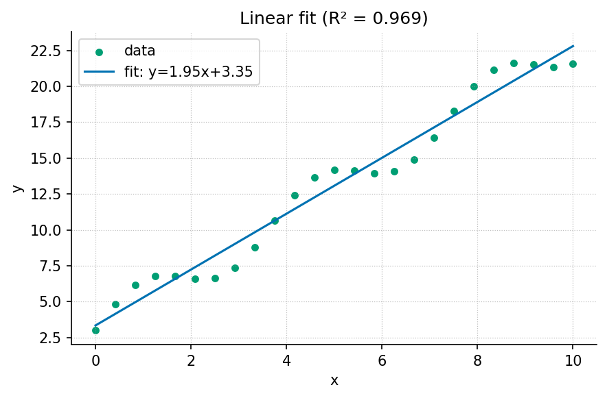
Guided study · Prerequisites: basic arithmetic and the preceding unit’s vocabulary
6.0.1 Study Blueprint
- Big idea: A number is interpretable only with its units, observation rule and summary convention.
- Core concepts: variable, parameter, observable, gradient.
- Quantitative lens: eq. 3.
- Data skill: Check units and divisors, then compare summaries with the original observations.
- Common misconception to repair: A small spread of observations and a small uncertainty in an estimate are different quantities.
- Primary lab: sec. 21.
- Question bank: sec. 33.
- Bridge to computation:
textbook.models.descriptive_statistics.
6.1 Learning Objectives
- Carry units through an arithmetic calculation.
- Compute a mean and distinguish population from sample spread.
- Explain why a summary can conceal the organization of observations.
Opening example. A report describes a reading as “five,” without saying whether it means five seconds, five degrees or five normalized units. Another reports “standard deviation,” without its divisor. Neither number is necessarily wrong; both are incomplete. Quantitative foundations supply the missing definitions before a calculation becomes a claim.
6.2 Quantities and units
A quantity combines a numerical value with a unit or an explicit dimensionless definition. Adding a duration to a distance is not meaningful simply because both are stored as floating-point numbers. In a rate calculation, quantity divided by time gives quantity per time; multiplying that rate by time restores the quantity dimension. These checks are inexpensive ways to reject an equation before writing code. Keep the chosen unit scale in a data dictionary: changing seconds to minutes changes the numerical value of a rate even when the underlying process is unchanged.
6.3 A mean describes a chosen collection
The arithmetic mean distributes a total evenly across a collection. The worked four-value example makes this definition visible. Equal weighting is a choice: four measurements collected from four people differ from four repeated readings on one person. An average that ignores this distinction can overstate the amount of independent information. Begin with the sampling unit, then decide which collection the reported mean describes. Keep identifiers long enough to reconstruct grouping decisions instead of reducing the dataset to an average at the moment it is read.
6.4 Spread has a convention
Population standard deviation describes dispersion in the supplied collection using a divisor equal to its size. A sample variance estimator uses a different divisor under its statistical assumptions. The book’s helper explicitly implements the population version. Neither formula should be silently swapped into the other’s interpretation. A standard error is another quantity again: it concerns variation in an estimator under a sampling model. An error bar therefore needs a label describing what it represents, not merely a decorative line above a plotted point.
6.5 Information lost by summarizing
Collections with the same mean can have different ranges, gaps, clusters or temporal order. A sequence of gradually increasing readings and an alternating sequence can share a mean and spread but suggest different processes. Inspect the raw values and their order before treating a summary as sufficient. The synthetic scatter figure retains point-to-line deviations for exactly this reason. Shannon’s mathematical treatment of communication (Shannon 1948) offers further reading on information and encoding; it does not turn a single mean into a complete representation of a dataset.
6.6 Scale and meaningful comparisons
When two quantities have different units, a normalization can make their ranges visually comparable. It does not make their physical meanings equivalent. State the reference bounds or centering rule and retain the original values. For a time series, preserve time labels even when normalizing the measured quantity. The lab asks you to change one value and then reorder all values: the first changes the mean, while the second preserves the arithmetic summary but changes the sequence. That comparison makes the limits of a statistic observable.
6.7 A Worked Formalism
\[ \mu=\frac{1}{n}\sum_{i=1}^{n}x_i,\qquad \sigma=\sqrt{\frac{1}{n}\sum_{i=1}^{n}(x_i-\mu)^2} \qquad{(3)}\]
| Symbol | Meaning | Units |
|---|---|---|
| \(x_i\) | Values in the described finite collection | data units |
| \(n\) | Number of values | count |
| \(\mu\) | Arithmetic mean | data units |
| \(\sigma\) | Population standard deviation of this collection | data units |
The sum of the four values is twenty, giving a mean of five. The squared deviations are nine, one, one and nine. Their mean is five, so the population standard deviation is \(\sqrt{5}\), approximately \(2.236\). Dividing the same squared-deviation sum by three instead would estimate sample variance; that is a different convention, not a rounding error.
import numpy as np
from textbook.models import descriptive_statistics
summary = descriptive_statistics([2.0, 4.0, 6.0, 8.0])
assert summary["mean"] == 5.0
assert np.isclose(summary["std"], np.sqrt(5.0))
assert summary["count"] == 4.0
print(summary)The equation is evaluated by the tested
textbook.models.descriptive_statistics. The assertions
above are independent expectations for this designed example; the
displayed figure in fig. 3 is a deterministic
illustration with its own explicitly stated inputs, not evidence
collected from the opening scenario.
6.8 Assumptions and Limits
This summary describes the supplied finite collection using the population divisor. It is not automatically an estimator of uncertainty in a larger population. Missing, censored or dependent observations require an explicit handling rule before summary statistics become interpretable. Keep that rule with the input data rather than silently discarding awkward observations.
flowchart LR
Q[Question and observation rule] --> I[Declared inputs and units]
I --> M[Tested model]
M --> P[Predicted quantities]
P --> C[Independent comparison]
C -->|record a revision| QThis diagram records the direction of a modeling workflow. An arrow names a relationship to specify; it does not add an unimplemented physical mechanism. Keep the original prediction when making the recorded revision.
6.9 Summary
A number is interpretable only with its units, observation rule and summary convention. The worked example makes a narrow quantitative claim that can be checked with exact inputs and a tested function. A small spread of observations and a small uncertainty in an estimate are different quantities. State the assumptions, preserve the observation record and choose a comparison that can distinguish an arithmetic error from an inadequate model. Those habits make a result inspectable without expanding what its evidence establishes.
6.10 Key Terms
variable, parameter, observable, gradient.
6.11 Further Reading
Shannon (Shannon 1948) develops a precise communication model; contrast an encoding problem with the choice of a scientific summary.
6.12 Practice
- Lab: sec. 21 — execute the worked computation and its boundary control.
- Question bank: sec. 33 — compare your reasoning with the supplied solutions.
7 Fundamentals
This unit develops the relationship between a mathematical law and its computational interface. First Principles derives a constrained growth trajectory. Building Blocks examines a static saturating response and the meaning of its parameters. Structure and Form explores representations, reference bounds and the information a transformation discards. Together the chapters distinguish a state law, an input-output component and a display convention, even when their figures look superficially similar.
Use the worked functions to evaluate designed values and their limiting cases. Carry units through every connection between components. A mathematical derivation and a successful implementation check answer different questions; keep both in the record. When comparing normalized values, preserve the original units and bounds. The question banks include solutions, but the most useful exercise is explaining why a tempting interpretation exceeds the calculation.
7.1 Chapters
7.2 Study Route
Read the chapter, work the paired lab in a fresh Python interpreter, and then answer the question bank before comparing your reasoning with its solutions. Retain units, assumptions and failed predictions in the study record.
8 First Principles

visualization.plots.plot_logistic_growth.Level 1/3 · 25 min read · 40 min lecture · Prerequisites: none
This chapter develops a worked growth model. Its assumptions, derivation, numerical example, lab, and question bank provide complementary ways to inspect the same relationship. Later chapters examine alternative models and limits.
8.1 Learning Objectives
By the end of this chapter you should be able to:
- Explain what it means to model a system as a small set of state variables and a rule for how they change.
- Distinguish a parameter from a variable, and identify each in a worked model.
- Derive and interpret the logistic growth law and predict its long-run behaviour toward an equilibrium.
- Compute model values with the tested function
textbook.models.logistic_growthrather than re-deriving arithmetic by hand.
8.1.1 Study Blueprint
- Big idea: A great deal of change in the world is captured by a handful of variables and a single rule relating their rates — the first principle of quantitative modelling.
- Core concepts: system, state, parameter, equilibrium.
- Quantitative lens: the logistic law in eq. 5.
- Data skill: read an S-curve and estimate its carrying capacity by eye, then confirm numerically.
- Common misconception to repair: “exponential” and “logistic” are not the same — unbounded growth is an early-time approximation, not the rule.
- Primary lab: sec. 22.
- Question bank: sec. 34.
- Bridge to computation:
textbook.models.logistic_growth.
Opening Vignette: Counting before you explain.
A population biologist watches a colony double, then double again, then — unexpectedly — slow. A start-up tracks users that grow the same way before the market saturates. A chemist measures a reaction that races, then crawls as substrate runs low. Three unrelated fields, one shape. The job of a first model is not to capture everything; it is to capture that shape with as few moving parts as possible.
8.2 From a system to a model
A model is a deliberate simplification. We choose a small number of state variables — here, a single quantity \(N(t)\) — and write a rule for how the state changes. The art is leaving things out: a first model that fits on one line teaches more than a faithful one that fills a page.
The variables are what change; the parameters are what we hold fixed while we reason. In the growth model below, \(N\) is the variable, while the rate \(r\) and the carrying capacity \(K\) are parameters. Confusing the two is the most common beginner error: if you find yourself “solving for \(K\) over time,” you have mislabelled a parameter as a variable.
8.3 A first quantitative law
Unbounded (exponential) growth assumes nothing ever pushes back. Some bounded systems can be approximated by a saturating model. One simple law that grows fast when small and levels off when large is the logistic equation, written as a rate of change in eq. 4 and in closed form in eq. 5:
\[ \frac{dN}{dt} = rN\left(1 - \frac{N}{K}\right) \qquad{(4)}\]
\[ N(t) = \frac{K}{1 + \left(\dfrac{K - N_0}{N_0}\right) e^{-rt}} \qquad{(5)}\]
Read eq. 4 aloud: the rate of change is proportional to how much there is (\(rN\)) times how much room remains (\(1 - N/K\)). When \(N\) is small the second factor is near \(1\) and growth is nearly exponential; as \(N\) approaches \(K\) the factor approaches \(0\) and growth stalls. The parameters are collected in tbl. 4.
| Symbol | Name | Role | Example value |
|---|---|---|---|
| \(N(t)\) | quantity | variable | computed |
| \(r\) | intrinsic rate | parameter | \(0.8\ \mathrm{s^{-1}}\) |
| \(K\) | carrying capacity | parameter | \(100\) units |
| \(N_0\) | initial value | parameter | \(5\) units |
8.4 Worked example
Take \(r = 0.8\), \(K = 100\), and \(N_0 = 5\). Rather than evaluate the exponential by hand, call the tested backbone:
import numpy as np
from textbook import models
t = np.array([0.0, 2.0, 5.0, 10.0])
N = models.logistic_growth(t, r=0.8, carrying_capacity=100.0, initial=5.0)
# N -> [ 5.00, 20.68, 74.18, 99.37 ]The trajectory starts at \(N(0) = 5.00\), reaches \(N(2) = 20.68\), passes the steep middle near \(t = 5\) with \(N(5) = 74.18\), and by \(t = 10\) has all but arrived at \(N(10) = 99.37\) — within one part in a hundred of the carrying capacity. This is the S-curve plotted in fig. 4: an early near-exponential rise, an inflection, and a long approach to the asymptote.
The long-run behaviour is exact, not approximate. Because \(r > 0\), the term \(e^{-rt} \to 0\), so \(N(t) \to K\). The proof is one line and is recorded as Theorem 1 in sec. 46; the same fact is asserted numerically by the test suite, so the prose and the code cannot silently disagree.
8.5 How the pieces connect
graph TD
A[Choose state variables] --> B[Write a rate rule]
B --> C[Solve or simulate]
C --> D[Predict long-run behaviour]
D -->|compare to data| AThis loop — choose, write, solve, predict, compare — is the first principle the rest of the book elaborates. Box discusses scientific model adequacy and revision (Box 1976). May examines the complicated dynamics of simple discrete models (May 1976); that work also cautions against conflating a continuous rate law with a discrete recurrence that happens to share a name.
8.6 Summary
A model trades completeness for clarity: a few state variables and one rule. The
logistic law adds a single idea — finite room — to exponential growth,
and that idea changes the long-run behaviour from unbounded increase to
a stable equilibrium at
the carrying capacity \(K\). Compute
with the tested logistic_growth function so your worked
numbers are reproducible and open to independent arithmetic checks.
8.7 Key Terms
system, model, state, parameter, equilibrium.
8.8 Further Reading
- Box (1976) — scientific reasoning about the adequacy and revision of models; compare the usefulness of an approximation with its assumptions.
- May (1976) — a primary analysis of complex behavior in simple discrete models; distinguish its recurrence dynamics from this continuous solution.
8.9 Practice
- Lab: sec. 22 — measure an S-curve and estimate its parameters.
- Question bank: sec. 34 — recall through synthesis.
9 Building Blocks

Guided study · Prerequisites: basic arithmetic and the preceding unit’s vocabulary
9.0.1 Study Blueprint
- Big idea: Reusable model components need explicit input domains, output meanings and limiting behavior.
- Core concepts: model, parameter, threshold, observable.
- Quantitative lens: eq. 6.
- Data skill: Probe a model component at designed boundary inputs before composing it.
- Common misconception to repair: A steep response curve does not by itself prove a switch or identify a molecular mechanism.
- Primary lab: sec. 23.
- Question bank: sec. 35.
- Bridge to computation:
textbook.models.saturating_response.
9.1 Learning Objectives
- Distinguish a static response from a dynamic state law.
- Interpret maximum, half-saturation and shape parameters.
- Check a component at its zero, midpoint and limiting inputs.
Opening example. A learner links a response curve to a growth model and expects the combined diagram to describe adaptation. The response curve has no memory, and the growth model has no measured input. Connecting the pictures cannot supply the missing state equation. Useful building blocks start with contracts that say what each component can represent.
9.2 Begin with the interface
An interface states which values a component accepts and what its result means. The response helper accepts non-negative input and positive scale and shape parameters. It returns a response in the declared output units. This contract does not mention elapsed time, so a time delay must not be inferred from the curve. Check domains before connecting components: a downstream function that requires a positive input cannot safely receive every output of a component whose valid range includes zero. Composition requires compatible contracts, not just visually appealing arrows.
9.3 Parameters have different jobs
The maximum sets an output scale, the half-saturation parameter sets an input scale and the shape exponent adjusts curvature. Changing the maximum multiplies the response everywhere. Changing the half-saturation moves the midpoint along the input axis. Changing the exponent preserves the midpoint but changes the transition around it. The generated figure holds the scales fixed while varying the exponent, making these roles separable. A parameter name should describe its mathematical job before a field-specific interpretation is attached to it.
9.4 Boundary cases reveal the model
At zero input the response is zero. At input equal to half-saturation the response is half of its maximum, for every valid exponent. As input increases without bound the response approaches its maximum. These checks follow directly from the equation and provide independent expectations for the implementation. The worked three-input calculation adds one interior value. Negative inputs must fail instead of silently producing complex or misleading values for non-integer exponents. Boundary cases are part of an explanation, not merely an implementation detail hidden in a test directory.
9.5 Shape does not establish mechanism
Several mechanisms can produce similar saturating observations. A static curve can summarize them without distinguishing them. To infer a mechanism, collect observations that separate its predictions from plausible alternatives, such as a transient response or a controlled intervention. Box’s discussion of model adequacy (Box 1976) is relevant to that evaluation. Do not label the shape exponent a count of interacting physical units unless a separate derivation and observation protocol justify that meaning for the application.
9.6 Compose only what is defined
A simple series composition sends one component’s output into another’s input. Retain units at the connection and write any conversion explicitly. Feedback composition is harder because an output affects an input in the same system: an algebraic equation or a state-update rule must specify how that loop is resolved. The diagram below shows a declared input, component and observation, with an evaluation arrow returning to assumptions. It is an explanatory map, not an executable simulator. The lab evaluates component boundaries and asks which additional equation a time-dependent claim would require.
9.7 A Worked Formalism
\[ y(x)=M\frac{x^h}{k^h+x^h} \qquad{(6)}\]
| Symbol | Meaning | Units |
|---|---|---|
| \(x\) | Non-negative input | input units |
| \(M\) | Positive maximum response | output units |
| \(k\) | Input giving half the maximum | input units |
| \(h\) | Positive shape exponent | dimensionless |
With a maximum of one, half-saturation input of three and exponent two, the outputs at zero, three and six are zero, one half and four fifths. At the half-saturation input, the numerator and the other denominator term are equal. Doubling the input from three to six therefore does not double the output: the finite ceiling changes the arithmetic.
import numpy as np
from textbook.models import saturating_response
x = np.array([0.0, 3.0, 6.0])
y = saturating_response(x, maximum=1.0, half_saturation=3.0, hill=2.0)
assert np.allclose(y, [0.0, 0.5, 0.8])
print(y)The equation is evaluated by the tested
textbook.models.saturating_response. The assertions above
are independent expectations for this designed example; the displayed
figure in fig. 5 is a
deterministic illustration with its own explicitly stated inputs, not
evidence collected from the opening scenario.
9.8 Assumptions and Limits
This function is a static response curve: it relates an input to an output without a state or elapsed time. It cannot by itself explain adaptation, delays, oscillation or memory. Different exponents describe different shapes but do not uniquely identify a physical mechanism. Interpret the parameters within the declared model rather than treating a fitted shape as a causal discovery.
flowchart LR
Q[Question and observation rule] --> I[Declared inputs and units]
I --> M[Tested model]
M --> P[Predicted quantities]
P --> C[Independent comparison]
C -->|record a revision| QThis diagram records the direction of a modeling workflow. An arrow names a relationship to specify; it does not add an unimplemented physical mechanism. Keep the original prediction when making the recorded revision.
9.9 Summary
Reusable model components need explicit input domains, output meanings and limiting behavior. The worked example makes a narrow quantitative claim that can be checked with exact inputs and a tested function. A steep response curve does not by itself prove a switch or identify a molecular mechanism. State the assumptions, preserve the observation record and choose a comparison that can distinguish an arithmetic error from an inadequate model. Those habits make a result inspectable without expanding what its evidence establishes.
9.10 Key Terms
model, parameter, threshold, observable.
9.11 Further Reading
Box (Box 1976) discusses selective checks of model inadequacy; use those checks to distinguish a convenient response family from a mechanism.
9.12 Practice
- Lab: sec. 23 — execute the worked computation and its boundary control.
- Question bank: sec. 35 — compare your reasoning with the supplied solutions.
10 Structure and Form
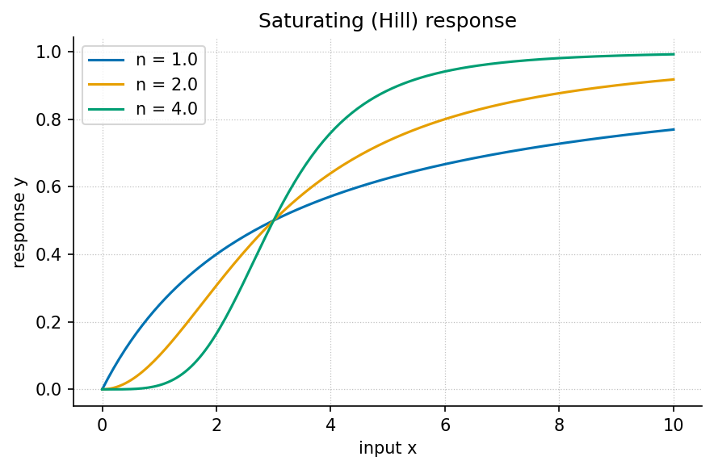
Guided study · Prerequisites: basic arithmetic and the preceding unit’s vocabulary
10.0.1 Study Blueprint
- Big idea: Representation exposes some relationships and suppresses others; retain the mapping back to original quantities.
- Core concepts: network, boundary, model, variable.
- Quantitative lens: eq. 7.
- Data skill: Preserve units, reference bounds and identifiers when transforming a representation.
- Common misconception to repair: Equal normalized values do not imply equal original quantities or equal mechanisms.
- Primary lab: sec. 24.
- Question bank: sec. 36.
- Bridge to computation:
textbook.models.normalize_unit_interval.
10.1 Learning Objectives
- Distinguish an interaction structure from the values placed on it.
- Apply min-max normalization and interpret its degenerate case.
- Identify information a normalized display does not preserve.
Opening example. Three rooms have readings of ten, twenty and thirty units. A normalized display colors them zero, one half and one. A second building with one hundred, two hundred and three hundred units receives the same colors. The pattern is comparable, but the magnitude has disappeared. A useful representation keeps both the pattern and its reference scale available.
10.2 Separate structure and state
A network describes elements and their relationships. Values on its nodes or edges describe a state or observation associated with that structure. A room adjacency network can stay fixed while temperatures change; a contact network can change while some node attributes remain fixed. Mixing these two layers makes it difficult to state what a model predicts. Define the node identity, edge meaning and associated quantity separately. A drawing’s position or color is an encoding choice unless the study explicitly gives it a physical meaning.
10.3 A transformation is a model choice
Min-max normalization uses the smallest and largest supplied observations as reference bounds. It preserves order for a collection with a nonzero range, and maps its endpoints to zero and one. This makes a representation convenient for comparing relative position within that collection. It removes the original unit scale unless the bounds are retained. The worked example deliberately uses an exact evenly spaced collection so the transformation can be checked without relying on an intricate plotting routine or a fitted parameter.
10.4 Degenerate forms need explicit rules
If all observations are equal, the range is zero. The ordinary fraction would divide by zero, so the tested helper chooses all zeros. This is an interface convention describing a degenerate case. It is not evidence that every room is at a physically meaningful zero, nor that no measurement uncertainty exists. Document the convention in an output record. A downstream visualization can then distinguish a truly varying range from a constant collection instead of presenting identical colors as if they conveyed the same information.
10.5 Compare compatible representations
Two independently normalized buildings each fill the entire zero-to-one color range. Comparing their colors as absolute temperatures would be an error. Choose shared reference bounds when the task concerns absolute comparisons; choose within-building bounds when the task concerns relative ordering, and label that choice. Neither choice is automatically superior. The scientific question determines which information must survive. The static response figure similarly shows several shapes on a common scale: equal range and midpoint do not imply that the functions have the same shape.
10.6 Keep identifiers through the pipeline
A transformed value needs a route back to its source observation. Carry the room identifier, original units and reference bounds alongside normalized values; never depend solely on display position. Explicit reusable metadata is part of the FAIR guidance (Wilkinson et al. 2016). Here, that idea becomes a small data table rather than a claim that a pretty plot is reusable. The lab asks you to normalize two differently scaled collections and explain exactly which similarity the shared output establishes and which difference it conceals.
10.7 A Worked Formalism
\[ z_i=\frac{x_i-\min_j x_j}{\max_j x_j-\min_j x_j} \qquad{(7)}\]
| Symbol | Meaning | Units |
|---|---|---|
| \(x_i\) | Original value | original units |
| \(\min x,\max x\) | Reference bounds | original units |
| \(z_i\) | Min-max normalized value | dimensionless |
The reference range is twenty. Subtracting ten from the three observations gives zero, ten and twenty, and division by the range gives zero, one half and one. A constant collection has no nonzero range, so the tested function explicitly returns zeros. That convention prevents division by zero; it does not manufacture variation or an interpretable physical distance.
import numpy as np
from textbook.models import normalize_unit_interval
z = normalize_unit_interval([10.0, 20.0, 30.0])
assert np.allclose(z, [0.0, 0.5, 1.0])
assert np.allclose(normalize_unit_interval([7.0, 7.0]), [0.0, 0.0])
print(z)The equation is evaluated by the tested
textbook.models.normalize_unit_interval. The assertions
above are independent expectations for this designed example; the
displayed figure in fig. 6
is a deterministic illustration with its own explicitly stated inputs,
not evidence collected from the opening scenario.
10.8 Assumptions and Limits
Scaling changes representation, not the evidence that generated it. Bounds estimated from one dataset must not be silently recalculated when comparing it with another. The function normalizes one supplied collection; fitting bounds on training data and applying them to future data requires a separately declared transformation. A visually neat scale can conceal these differences unless original units and bounds are retained.
flowchart LR
Q[Question and observation rule] --> I[Declared inputs and units]
I --> M[Tested model]
M --> P[Predicted quantities]
P --> C[Independent comparison]
C -->|record a revision| QThis diagram records the direction of a modeling workflow. An arrow names a relationship to specify; it does not add an unimplemented physical mechanism. Keep the original prediction when making the recorded revision.
10.9 Summary
Representation exposes some relationships and suppresses others; retain the mapping back to original quantities. The worked example makes a narrow quantitative claim that can be checked with exact inputs and a tested function. Equal normalized values do not imply equal original quantities or equal mechanisms. State the assumptions, preserve the observation record and choose a comparison that can distinguish an arithmetic error from an inadequate model. Those habits make a result inspectable without expanding what its evidence establishes.
10.10 Key Terms
network, boundary, model, variable.
10.11 Further Reading
Wilkinson and colleagues (Wilkinson et al. 2016) describe metadata and reuse principles; consider which metadata makes a normalized value interpretable.
10.12 Practice
- Lab: sec. 24 — execute the worked computation and its boundary control.
- Question bank: sec. 36 — compare your reasoning with the supplied solutions.
11 Core Systems
This unit combines state, observation, time and feedback. Systems Overview names the components of a systems description and separates internal invariants from observed adequacy. Dynamics and Change derives an exponential timescale and tests the difference between a constant fractional loss and a constant absolute loss. Regulation and Control connects that tractable trajectory to a narrowly defined ideal controller, then explains why timing, disturbance and capacity limits change the conclusion.
A loop diagram is a guide to specifying equations, not evidence of stability. For each model, record the update law, the observation rule and the assumptions about sampling and delay. Compare equal time intervals with equal fractions before interpreting a curve. Keep the ideal example separate from an engineering recommendation: real plant dynamics and observations would be required for the latter.
11.1 Chapters
11.2 Study Route
Read the chapter, work the paired lab in a fresh Python interpreter, and then answer the question bank before comparing your reasoning with its solutions. Retain units, assumptions and failed predictions in the study record.
12 Systems Overview
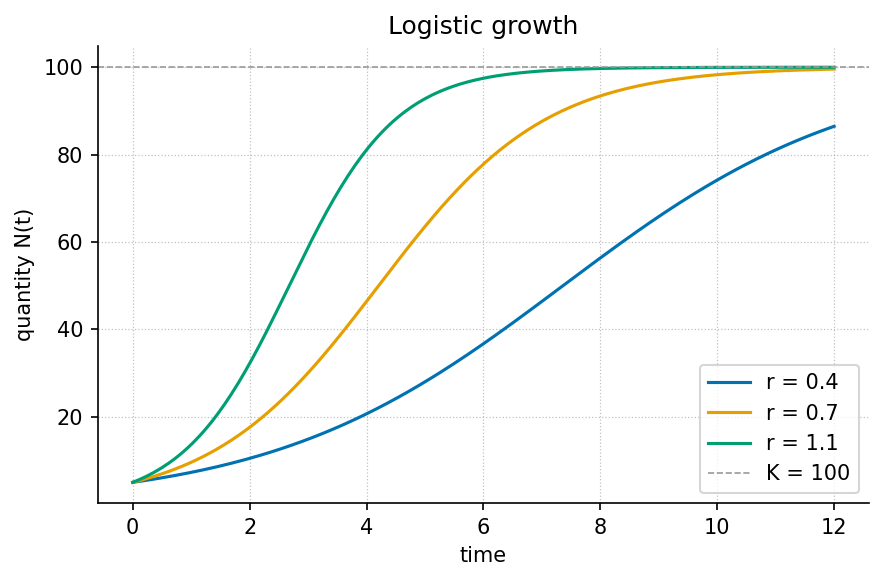
Guided study · Prerequisites: basic arithmetic and the preceding unit’s vocabulary
12.0.1 Study Blueprint
- Big idea: A systems description combines a state, an update law, an observation rule and a declared environment.
- Core concepts: system, state, boundary, feedback.
- Quantitative lens: eq. 8.
- Data skill: Track state, update rule and measurement process as separate parts of a system record.
- Common misconception to repair: A stable-looking observable is not sufficient evidence that the entire system is at equilibrium.
- Primary lab: sec. 25.
- Question bank: sec. 37.
- Bridge to computation:
textbook.models.logistic_growth.
12.1 Learning Objectives
- Identify the four components of a systems description.
- Distinguish state constraints from observed trends.
- Evaluate a model using both its internal invariants and external observations.
Opening example. A dashboard shows a stock approaching a ceiling. One observer attributes the ceiling to limited capacity; another points to a change in counting rules. Both explanations can produce a flat line. A systems overview asks what changed inside the system, what crossed its boundary, and what the dashboard actually measured.
12.2 The state and its update
The state is the information the model uses to determine subsequent change. For a one-variable logistic model, the state is the quantity at a time; its update law depends on the rate and capacity parameters. A larger model may need several stocks, their interactions and delayed effects. There is no guarantee that every system can be summarized by one scalar. Choose the state for the question and horizon at hand, and state which influences the update law omits. An equation’s compactness should make those omissions easier to inspect.
12.3 The environment and observation
External inputs describe conditions outside the chosen boundary. An observation rule maps the modeled state to a recorded quantity. Neither belongs silently inside the state equation. A dashboard can flatten because registration stops, because measurement reaches its range limit, or because the underlying stock stabilizes. These cases require different follow-up observations. Document any instrument limit or changed eligibility rule before attributing a change in the plotted series to an internal system mechanism.
12.4 Invariants as internal checks
With the declared logistic parameter domain and a non-negative time axis, the computed state remains positive and no larger than capacity. These constraints can detect an implementation defect or an invalid input. They do not establish that a measured system actually has this domain or capacity. A model can obey all its internal invariants and still fail to predict observations. Keep the two checks separate: internal consistency is necessary for using the equation, while external comparison determines whether it is useful for the application.
12.5 Equilibrium needs a rule
An equilibrium is a state with zero change under the specified update law. For logistic growth, the mathematical rate vanishes at zero and at capacity. The shipped closed-form helper deliberately accepts a strictly positive initial state no larger than capacity, so its allowed trajectories approach the latter. That API restriction is narrower than the mathematical equation’s full state space. When discussing a model, distinguish properties of the equation from properties of the implemented domain. This prevents a valid software guard from being mistaken for a universal statement about all systems.
12.6 Examine interactions before enlarging the model
Add a component when it resolves a specific inadequacy, such as an omitted input with a measurable effect. Additional states bring additional parameters, observations and identifiability questions. An elaborate diagram without an observation plan can make the original question harder to answer. Nyquist’s primary analysis (Nyquist 1932) illustrates that feedback stability requires mathematical conditions, not simply a loop drawn with arrows. The lab uses the small logistic case to practice a complete systems record before any larger feedback or interaction model is proposed.
12.7 A Worked Formalism
\[ N(t)=\frac{K}{1+((K-N_0)/N_0)e^{-rt}} \qquad{(8)}\]
| Symbol | Meaning | Units |
|---|---|---|
| \(N(t)\) | State at time \(t\) | quantity |
| \(N_0\) | Initial state, between zero and \(K\) | quantity |
| \(K\) | Capacity held fixed in this model | quantity |
| \(r\) | Positive growth rate | inverse time |
At time zero the denominator is \(1+19=20\), so the state is exactly five units. At time two it is \(1+19e^{-1.4}\), giving about \(17.59\) units. The state approaches \(100\) as the exponential term approaches zero. These are predictions of a chosen model, not measured evidence that a real population or service has a fixed capacity.
import numpy as np
from textbook.models import logistic_growth
time = np.array([0.0, 2.0, 5.0])
values = logistic_growth(time, r=0.7, carrying_capacity=100.0, initial=5.0)
assert np.isclose(values[0], 5.0)
assert np.all(np.diff(values) > 0)
assert np.all(values < 100.0)
print(values)The equation is evaluated by the tested
textbook.models.logistic_growth. The assertions above are
independent expectations for this designed example; the displayed figure
in fig. 7 is a deterministic
illustration with its own explicitly stated inputs, not evidence
collected from the opening scenario.
12.8 Assumptions and Limits
The closed form assumes a constant positive rate and a fixed capacity with an initial state strictly above zero and no larger than capacity. It omits migration, changing resources and random shocks. A discrepancy can therefore reflect a failed assumption rather than a programming error. First inspect the units and initial value, then ask which omitted process could generate the observed discrepancy.
flowchart LR
Q[Question and observation rule] --> I[Declared inputs and units]
I --> M[Tested model]
M --> P[Predicted quantities]
P --> C[Independent comparison]
C -->|record a revision| QThis diagram records the direction of a modeling workflow. An arrow names a relationship to specify; it does not add an unimplemented physical mechanism. Keep the original prediction when making the recorded revision.
12.9 Summary
A systems description combines a state, an update law, an observation rule and a declared environment. The worked example makes a narrow quantitative claim that can be checked with exact inputs and a tested function. A stable-looking observable is not sufficient evidence that the entire system is at equilibrium. State the assumptions, preserve the observation record and choose a comparison that can distinguish an arithmetic error from an inadequate model. Those habits make a result inspectable without expanding what its evidence establishes.
12.10 Key Terms
system, state, boundary, feedback.
12.11 Further Reading
Nyquist (Nyquist 1932) analyzes stability for specified feedback systems; compare a formal condition with an informal loop diagram.
12.12 Practice
- Lab: sec. 25 — execute the worked computation and its boundary control.
- Question bank: sec. 37 — compare your reasoning with the supplied solutions.
13 Dynamics and Change
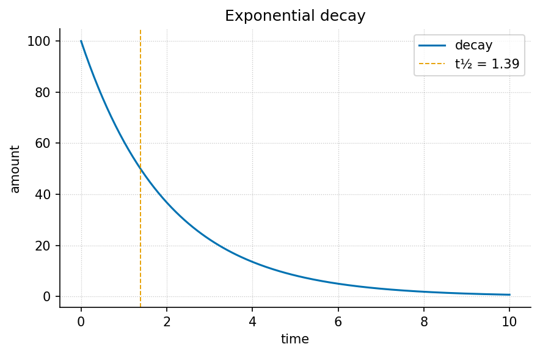
Guided study · Prerequisites: basic arithmetic and the preceding unit’s vocabulary
13.0.1 Study Blueprint
- Big idea: A dynamic law specifies how state changes with time; its rate and timescale must remain distinct.
- Core concepts: dynamics, state, equilibrium, parameter.
- Quantitative lens: eq. 9.
- Data skill: Use ratios over equal intervals to inspect a proposed constant fractional loss rate.
- Common misconception to repair: Deterministic equations do not automatically provide accurate forecasts for arbitrarily long times.
- Primary lab: sec. 26.
- Question bank: sec. 38.
- Bridge to computation:
textbook.models.exponential_decay.
13.1 Learning Objectives
- Derive a half-life from a fractional decay law.
- Compare changes over equal time intervals.
- State why a deterministic model can still have a limited prediction horizon.
Opening example. A stored quantity falls from one hundred to fifty, then to twenty-five over equal intervals. A straight-line extension would reach zero after the next interval. A fractional-loss model instead predicts twelve and one half. The choice between constant amount and constant fraction is a claim about change, and data can distinguish them.
13.2 From a rate to a trajectory
The decay law says the instantaneous loss rate is proportional to the amount remaining. In differential form it is \(de/dt=-\lambda e\). The closed form in the worked equation follows by separating variables and applying the initial value. A trajectory gives the state at requested times; a rate gives change per time. Confusing these meanings produces errors in both dimensions and interpretation. Multiplying the decay rate by a time interval gives a dimensionless exponent, which is a useful unit check before evaluating the expression.
13.3 Equal intervals, unequal losses
For a time increment \(\Delta t\), the ratio between successive amounts is \(e(t+\Delta t)/e(t)=e^{-\lambda\Delta t}\). It is independent of the starting time under the constant-rate model. The absolute loss is not independent of the remaining amount: larger stocks lose more in the same interval. Use observed ratios as a diagnostic, but remember that noisy measurements and replenishment can change them. An exact synthetic sequence verifies the formula; an actual sequence requires an observation model before the rate can be inferred reliably.
13.4 Timescales help comparisons
The reciprocal rate is a characteristic time, while the half-life
includes a factor of the logarithm of two. Both decrease as the rate
increases. Stating a timescale often makes a comparison easier to
interpret than stating a decimal rate without units. It also makes a
dimensional error visible: a half-life must have time units. At zero
rate the amount stays constant and there is no finite half-life. The
helper’s rejection of a zero rate in half_life preserves
that distinction instead of returning a misleading finite number.
13.5 Initial conditions and forecast limits
Changing the initial amount scales the entire exponential trajectory. Changing the rate changes its shape on the time axis. In more general nonlinear systems, small changes in the initial state can have larger effects than simple scaling. Lorenz’s specified nonlinear flow model (Lorenz 1963) provides a primary example of sensitivity to initial conditions. This book’s exponential exercise is not a simulation of that system. It is a tractable contrast that shows why forecast claims must be attached to a particular model and domain.
13.6 Check change at several resolutions
A coarse measurement interval can conceal fast transients or an external pulse. Collecting more decimal places at the same coarse times does not recover those events. Choose a measurement interval suitable for the proposed timescale, then preserve timestamps alongside values. Compare predicted and observed quantities in their original units before normalizing a display. The lab asks you to halve the measurement interval while retaining the same rate, so that an altered sampling grid can be distinguished from a genuinely changed process.
13.7 A Worked Formalism
\[ e(t)=e_0e^{-\lambda t},\qquad t_{1/2}=\frac{\ln 2}{\lambda} \qquad{(9)}\]
| Symbol | Meaning | Units |
|---|---|---|
| \(e(t)\) | Non-negative quantity or error magnitude | quantity |
| \(e_0\) | Initial magnitude | quantity |
| \(\lambda\) | Constant positive decay rate | inverse time |
| \(t_{1/2}\) | Time to halve the magnitude | time |
Setting the remaining amount to half its initial value gives \(e^{-\lambda t}=1/2\). Taking logarithms yields the half-life in the equation. At rate one half per time unit, the half-life is about \(1.386\) time units. Starting at one hundred, successive half-lives give fifty and twenty-five; equal time intervals remove equal fractions, not equal amounts.
import numpy as np
from textbook.models import exponential_decay, half_life
rate = 0.5
t_half = half_life(rate)
values = exponential_decay([0.0, t_half, 2*t_half], initial=100.0, rate=rate)
assert np.allclose(values, [100.0, 50.0, 25.0])
print(t_half, values)The equation is evaluated by the tested
textbook.models.exponential_decay. The assertions above are
independent expectations for this designed example; the displayed figure
in fig. 8 is a
deterministic illustration with its own explicitly stated inputs, not
evidence collected from the opening scenario.
13.8 Assumptions and Limits
The model assumes a constant fractional loss rate with no replenishment. For a feedback interpretation it also assumes a continuous, undelayed ideal controller with an unsaturated actuator. A changing rate, external input or measurement delay breaks the closed-form description. The function permits zero rate as a constant trajectory, but half-life requires a strictly positive rate.
flowchart LR
Q[Question and observation rule] --> I[Declared inputs and units]
I --> M[Tested model]
M --> P[Predicted quantities]
P --> C[Independent comparison]
C -->|record a revision| QThis diagram records the direction of a modeling workflow. An arrow names a relationship to specify; it does not add an unimplemented physical mechanism. Keep the original prediction when making the recorded revision.
13.9 Summary
A dynamic law specifies how state changes with time; its rate and timescale must remain distinct. The worked example makes a narrow quantitative claim that can be checked with exact inputs and a tested function. Deterministic equations do not automatically provide accurate forecasts for arbitrarily long times. State the assumptions, preserve the observation record and choose a comparison that can distinguish an arithmetic error from an inadequate model. Those habits make a result inspectable without expanding what its evidence establishes.
13.10 Key Terms
dynamics, state, equilibrium, parameter.
13.11 Further Reading
Lorenz (Lorenz 1963) studies one specific nonlinear flow model; May (May 1976) examines discrete-time dynamics, which should not be conflated with this continuous decay law.
13.12 Practice
- Lab: sec. 26 — execute the worked computation and its boundary control.
- Question bank: sec. 38 — compare your reasoning with the supplied solutions.
14 Regulation and Control

Guided study · Prerequisites: basic arithmetic and the preceding unit’s vocabulary
14.0.1 Study Blueprint
- Big idea: Regulation is a declared relationship between a measured error and an action, with assumptions about timing and limits.
- Core concepts: feedback, regulation, state, equilibrium.
- Quantitative lens: eq. 10.
- Data skill: Keep the controller law, plant law and measurement rule separate before deriving a closed-loop response.
- Common misconception to repair: Drawing a negative-feedback loop does not prove that it is stable.
- Primary lab: sec. 27.
- Question bank: sec. 39.
- Bridge to computation:
textbook.models.exponential_decay.
14.1 Learning Objectives
- Define a setpoint, measured state and error.
- Derive ideal proportional error decay for an integrator plant.
- Identify why delay, saturation or noise invalidates the ideal response.
Opening example. An ideal controller sees a positive gap between a tank level and its target and adds fluid in proportion to that gap. Near the target it acts more gently. A real controller must also wait for measurements, respect pump limits and cope with leakage. The ideal curve is useful because those additional influences can be named as departures from its assumptions.
14.2 Define the error
Let a constant setpoint be \(s\), the measured state be \(y(t)\) and the signed error be \(e(t)=s-y(t)\). A positive error means the measured state lies below the target under this convention. Sign conventions are part of the interface: reversing the error without changing the action law can turn corrective action into reinforcing action. Write the convention before tuning a gain. Also state whether the controller acts on a measured state, a delayed observation or an estimate, since those cases are different closed-loop systems.
14.3 Derive the ideal response
For an ideal integrator plant, \(dy/dt=u\), and proportional action is \(u=ke\) with positive gain \(k\). With a fixed target, differentiating the error gives \(de/dt=-ke\). For an initially positive gap its magnitude is exactly the exponential decay computed by the helper with rate \(k\). This derivation links a controller, a plant and a trajectory; none of the three can be inferred from the trajectory alone. The worked equation applies to this narrowly specified ideal case and does not establish the behavior of an arbitrary controller.
14.4 Gain trades time for other constraints
In the ideal model, a larger positive gain reduces the half-life and leaves the asymptotic error at zero. The physical action initially equals gain times error. Increasing gain can therefore require a pump or actuator capacity that the real system does not have. If action is clipped at a maximum, early-time behavior follows another law and the single exponential no longer describes the full response. State the capacity limit before claiming a faster response from a larger numerical gain. A tested formula cannot remove a physical bound.
14.5 Timing can change the system
The ideal derivation uses the current error continuously. A sampled controller acts at intervals, and a delayed sensor supplies an earlier state. These changes can produce overshoot or instability depending on the actual update law. Nyquist’s analysis (Nyquist 1932) gives primary historical treatment of stability for specified feedback systems. Here the important habit is to state the delay and sampling assumptions explicitly. A diagram conveys the connections, but a stability conclusion requires the corresponding mathematics and a domain of parameter values.
14.6 Evaluate the disturbance story
A constant leak, varying target or noisy observation changes the error dynamics. Ask which disturbance is relevant before selecting a more elaborate controller. For example, an ideal action that decays toward zero cannot offset a continuing unmodeled leak while maintaining the target. The lab first verifies the ideal halving sequence, then asks why an observed plateau would challenge the no-disturbance assumption. Keeping a failed prediction in the record supports model revision; quietly replacing its parameters after observing the plateau does not establish that the original controller model was adequate.
14.7 A Worked Formalism
\[ e(t)=e_0e^{-\lambda t},\qquad t_{1/2}=\frac{\ln 2}{\lambda} \qquad{(10)}\]
| Symbol | Meaning | Units |
|---|---|---|
| \(e(t)\) | Non-negative quantity or error magnitude | quantity |
| \(e_0\) | Initial magnitude | quantity |
| \(\lambda\) | Constant positive decay rate | inverse time |
| \(t_{1/2}\) | Time to halve the magnitude | time |
Setting the remaining amount to half its initial value gives \(e^{-\lambda t}=1/2\). Taking logarithms yields the half-life in the equation. At rate one half per time unit, the half-life is about \(1.386\) time units. Starting at one hundred, successive half-lives give fifty and twenty-five; equal time intervals remove equal fractions, not equal amounts.
import numpy as np
from textbook.models import exponential_decay, half_life
rate = 0.5
t_half = half_life(rate)
values = exponential_decay([0.0, t_half, 2*t_half], initial=100.0, rate=rate)
assert np.allclose(values, [100.0, 50.0, 25.0])
print(t_half, values)The equation is evaluated by the tested
textbook.models.exponential_decay. The assertions above are
independent expectations for this designed example; the displayed figure
in fig. 9 is a
deterministic illustration with its own explicitly stated inputs, not
evidence collected from the opening scenario.
14.8 Assumptions and Limits
The model assumes a constant fractional loss rate with no replenishment. For a feedback interpretation it also assumes a continuous, undelayed ideal controller with an unsaturated actuator. A changing rate, external input or measurement delay breaks the closed-form description. The function permits zero rate as a constant trajectory, but half-life requires a strictly positive rate.
flowchart LR
Q[Question and observation rule] --> I[Declared inputs and units]
I --> M[Tested model]
M --> P[Predicted quantities]
P --> C[Independent comparison]
C -->|record a revision| QThis diagram records the direction of a modeling workflow. An arrow names a relationship to specify; it does not add an unimplemented physical mechanism. Keep the original prediction when making the recorded revision.
14.9 Summary
Regulation is a declared relationship between a measured error and an action, with assumptions about timing and limits. The worked example makes a narrow quantitative claim that can be checked with exact inputs and a tested function. Drawing a negative-feedback loop does not prove that it is stable. State the assumptions, preserve the observation record and choose a comparison that can distinguish an arithmetic error from an inadequate model. Those habits make a result inspectable without expanding what its evidence establishes.
14.10 Key Terms
feedback, regulation, state, equilibrium.
14.11 Further Reading
Nyquist (Nyquist 1932) treats feedback stability for defined systems; compare the conditions in that analysis with the ideal no-delay derivation here.
14.12 Practice
- Lab: sec. 27 — execute the worked computation and its boundary control.
- Question bank: sec. 39 — compare your reasoning with the supplied solutions.
15 Applications and Synthesis
This unit asks what a result can justify. Applied Models compares families where their predictions differ. Case Studies uses the bundled instructional fixture to practice grouping, fitting and the limits of interpolation. Frontiers and Open Problems turns vague uncertainty into a specific evidence gap and a next discriminating check. The emphasis is an inspectable recommendation with a declared domain, rather than a compelling fit presented as a universal explanation.
Reuse the numerical backbone while keeping the fitting and evaluation records distinct. In the case study, the CSV is the source of the illustrated values; it is not a claim that a new pilot experiment was conducted for this book. In the final lab, design a negative control for a proposed claim and state which result would change the claim. The resulting artifact should tell another learner both what was established and what remains unverified.
15.1 Chapters
15.2 Study Route
Read the chapter, work the paired lab in a fresh Python interpreter, and then answer the question bank before comparing your reasoning with its solutions. Retain units, assumptions and failed predictions in the study record.
16 Applied Models

Guided study · Prerequisites: basic arithmetic and the preceding unit’s vocabulary
16.0.1 Study Blueprint
- Big idea: Choose a model family by the question and evidence it can represent, then compare alternatives where they differ.
- Core concepts: model, parameter, threshold, observable.
- Quantitative lens: eq. 11.
- Data skill: Compare model predictions at designed inputs that discriminate between families.
- Common misconception to repair: The best fit within the existing range need not provide the best prediction outside it.
- Primary lab: sec. 28.
- Question bank: sec. 40.
- Bridge to computation:
textbook.models.saturating_response.
16.1 Learning Objectives
- Select a static or dynamic family for a stated observation.
- Use limiting behavior to distinguish a line from a saturating response.
- Separate parameter fitting from independent model evaluation.
Opening example. A calibration series covers only low inputs, where a straight line and a saturating curve are almost indistinguishable. Both fit well, but they predict different outputs at higher inputs. The next useful observation is therefore not necessarily another low-input replicate: it may be a safe, controlled input where the two predictions diverge.
16.2 Match the family to the question
A static input-output calibration calls for a response function; a state evolving over time calls for a dynamic law. A model family should represent the kind of claim being made before its parameters are fitted. The backbone offers both types, with deliberately limited contracts. Do not use a saturating response to claim adaptation time, or a logistic time trajectory to imply that a measured input caused the change. Naming the independent variable and its units is an effective first check of whether a proposed family fits the question.
16.3 Examine limiting behavior
A fitted straight line increases or decreases without a ceiling. The response curve has a finite positive maximum. In a narrow range both can resemble the same local trend. Their disagreement at other inputs supplies a possible evaluation design, subject to safety and feasibility in the actual application. The worked response calculation illustrates diminishing gains without claiming that every physical process must saturate. Write each alternative’s limiting behavior next to its data-range fit, so that a convenient interpolation does not quietly become an unlimited extrapolation.
16.4 Fitting uses information
Parameters estimated from observations have already used those observations. Judging predictions on the same data therefore answers a different question from judging future or held-out observations. Preserve the fitting set and declare the evaluation set before checking results when possible. Avoid choosing a model after repeatedly examining an evaluation set and then describing that set as untouched. For a very small instructional dataset, it can be more honest to call the fit a descriptive exercise and identify independent evaluation as the next needed step.
16.5 Inspect residuals and domain restrictions
A single fit score compresses several forms of inadequacy. Inspect residuals in original units and against the input: a consistent curve, a changed spread or an isolated outlier can suggest different failures. Also check whether the parameter values lie within the implementation’s accepted domain. A numerical optimizer returning a value does not make that value meaningful. Box’s primary discussion (Box 1976) connects selective concern about model inadequacies with scientific iteration; this chapter’s small comparisons practice that judgment without inventing a universal model-selection rule.
16.6 Communicate a bounded recommendation
A recommendation should state the application range, observation rule, fitted parameters, evaluation evidence and remaining uncertainty. In the low-input calibration vignette, a defensible conclusion is that both families describe the measured range and that a discriminating observation is needed for their different high-input predictions. It is not that one equation has discovered the mechanism. The lab uses exact response values and a simple line to make the disagreement explicit. Its arithmetic is reproducible, while the question of which family describes a real system remains an empirical task.
16.7 A Worked Formalism
\[ y(x)=M\frac{x^h}{k^h+x^h} \qquad{(11)}\]
| Symbol | Meaning | Units |
|---|---|---|
| \(x\) | Non-negative input | input units |
| \(M\) | Positive maximum response | output units |
| \(k\) | Input giving half the maximum | input units |
| \(h\) | Positive shape exponent | dimensionless |
With a maximum of one, half-saturation input of three and exponent two, the outputs at zero, three and six are zero, one half and four fifths. At the half-saturation input, the numerator and the other denominator term are equal. Doubling the input from three to six therefore does not double the output: the finite ceiling changes the arithmetic.
import numpy as np
from textbook.models import saturating_response
x = np.array([0.0, 3.0, 6.0])
y = saturating_response(x, maximum=1.0, half_saturation=3.0, hill=2.0)
assert np.allclose(y, [0.0, 0.5, 0.8])
print(y)The equation is evaluated by the tested
textbook.models.saturating_response. The assertions above
are independent expectations for this designed example; the displayed
figure in fig. 10 is a
deterministic illustration with its own explicitly stated inputs, not
evidence collected from the opening scenario.
16.8 Assumptions and Limits
This function is a static response curve: it relates an input to an output without a state or elapsed time. It cannot by itself explain adaptation, delays, oscillation or memory. Different exponents describe different shapes but do not uniquely identify a physical mechanism. Interpret the parameters within the declared model rather than treating a fitted shape as a causal discovery.
flowchart LR
Q[Question and observation rule] --> I[Declared inputs and units]
I --> M[Tested model]
M --> P[Predicted quantities]
P --> C[Independent comparison]
C -->|record a revision| QThis diagram records the direction of a modeling workflow. An arrow names a relationship to specify; it does not add an unimplemented physical mechanism. Keep the original prediction when making the recorded revision.
16.9 Summary
Choose a model family by the question and evidence it can represent, then compare alternatives where they differ. The worked example makes a narrow quantitative claim that can be checked with exact inputs and a tested function. The best fit within the existing range need not provide the best prediction outside it. State the assumptions, preserve the observation record and choose a comparison that can distinguish an arithmetic error from an inadequate model. Those habits make a result inspectable without expanding what its evidence establishes.
16.10 Key Terms
model, parameter, threshold, observable.
16.11 Further Reading
Box (Box 1976) offers primary guidance on confronting model inadequacy; compare a residual diagnostic with collecting a new discriminating observation.
16.12 Practice
- Lab: sec. 28 — execute the worked computation and its boundary control.
- Question bank: sec. 40 — compare your reasoning with the supplied solutions.
17 Case Studies
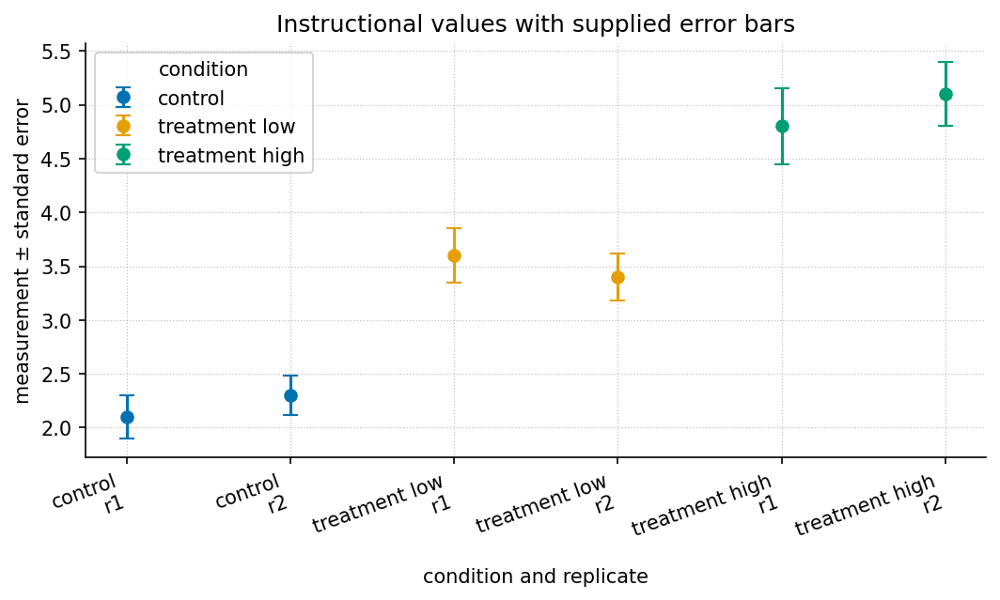
manuscript/assets/data/sample_dataset.csv.Level 2/3 · 30 min read · 45 min lecture · Prerequisites: First Principles
This chapter is a worked reference in a different style from sec. 8: where that chapter derives a model, this one applies one to a small dataset. The book uses both styles to connect model assumptions with computations.
17.1 Learning Objectives
By the end of this chapter you should be able to:
- Frame a real question as a comparison between a system under control and treatment conditions.
- Summarise grouped observable data with means and a measure of spread, and read an error-bar figure.
- Fit a simple dose–response trend with
textbook.models.linear_fitand state what its slope and \(R^2\) mean. - Distinguish a defensible interpolation from an unjustified extrapolation.
17.1.1 Study Blueprint
- Big idea: A case study turns a general model into a decision about a specific dataset — and into an honest statement of its limits.
- Core concepts: observable, gradient, threshold.
- Quantitative lens: a linear dose–response fit, eq. 12.
- Data skill: group, average, and fit; then sanity-check the fit against the raw numbers in tbl. 11.
- Common misconception to repair: a high \(R^2\) on three points is not strong evidence — it is an invitation to collect more.
- Primary lab: sec. 29.
- Question bank: sec. 41.
- Bridge to computation:
textbook.models.linear_fit,descriptive_statistics.
Opening Vignette: From a spreadsheet to a decision.
Consider an instructional scenario with a control condition and two treatment levels, two replicates each. These illustrative numbers are supplied in a spreadsheet; no new empirical pilot is reported. The question is not “are they different?” — they obviously are — but “by how much, how confidently, and what should we predict next?” A case study is the discipline of answering those three questions without overreaching.
17.2 The data
The bundled instructional fixture contains six values across three
conditions, recorded in assets/data/sample_dataset.csv and
reproduced in tbl. 11.
| Condition | Replicate | Measurement | Standard error |
|---|---|---|---|
| control | 1 | 2.10 | 0.20 |
| control | 2 | 2.30 | 0.18 |
| treatment (low) | 1 | 3.60 | 0.25 |
| treatment (low) | 2 | 3.40 | 0.22 |
| treatment (high) | 1 | 4.80 | 0.35 |
| treatment (high) | 2 | 5.10 | 0.30 |
Grouping and averaging — the first move in almost every case study —
gives means of \(2.20\) (control),
\(3.50\) (low), and \(4.95\) (high). Across all six points the
mean is \(3.55\) with a standard
deviation of \(1.13\)
(textbook.models.descriptive_statistics). The error-bar
view is fig. 11. The supplied
row errors are fixture annotations; they are not calculated from these
two replicates. The reported overall spread uses the population
denominator and is not an estimated standard error.
17.3 Fitting a trend
Encode the dose as \(0, 1, 2\) for
control, low, and high, and fit a line with
textbook.models.linear_fit:
import numpy as np
from textbook import models
dose = np.array([0.0, 1.0, 2.0])
response = np.array([2.20, 3.50, 4.95]) # condition means
fit = models.linear_fit(dose, response)
# fit.slope ≈ 1.375, fit.intercept ≈ 2.175, fit.r_squared ≈ 0.999The fitted relationship in eq. 12 is
\[ \widehat{y}(d) = 1.375\,d + 2.175 \qquad{(12)}\]
with \(R^2 = 0.999\). The slope says each dose step adds about \(1.4\) units of response; the intercept, \(2.175\), is close to the measured control mean of \(2.20\), a reassuring internal check.
17.4 Interpolation versus extrapolation
Using eq. 12 to estimate the response at an intermediate dose is reasonable: the model interpolates within the range it was fit on. Using it to predict a much higher dose — say \(d = 3\), giving \(\widehat{y} = 6.3\) — is an extrapolation the data cannot support. An alternative dose–response model could saturate (recall the threshold behaviour of the saturating response in sec. 45); a straight line would overpredict if the system approached a ceiling. The fixture does not establish which mechanism applies.
graph LR
A[Raw measurements] --> B[Group + average]
B --> C[Fit a trend]
C --> D{Within data range?}
D -->|yes| E[Interpolate: defensible]
D -->|no| F[Extrapolate: flag the risk]Warning. A linear fit through three averaged points reports \(R^2 = 0.999\), but that number describes how well the line passes through three dots — not how well it predicts the next experiment. Treat it as a reason to collect more data, not as a conclusion. Box discusses the adequacy of scientific models (Box 1976); reproducible handling of the calculation is a distinct concern addressed by Sandve and colleagues (Sandve et al. 2013).
17.5 Summary
A case study moves from raw observables to a summary, a
fitted trend, and — crucially — an honest boundary around what the trend
can claim. Here, averaging and a linear_fit recovered a
clean dose–response slope of about \(1.4\) units per step with an intercept that
matched the control, but the same fit must not be pushed beyond the
measured range. The reusable move is: summarise, fit, then state the
limits.
17.6 Key Terms
observable, gradient, threshold, model.
17.7 Further Reading
- Box (1976) — reasoning about models as useful approximations, which motivates explicitly stating the limits of this fitted trend.
- Sandve et al. (2013) — reproducible computational research practices; use them to preserve the fixture, code, parameters, and resulting calculation.
17.8 Practice
- Lab: sec. 29 — re-run the grouping and fit, then add a fourth condition and watch the fit change.
- Question bank: sec. 41 — recall through synthesis.
18 Frontiers and Open Problems

Guided study · Prerequisites: basic arithmetic and the preceding unit’s vocabulary
18.0.1 Study Blueprint
- Big idea: An open problem becomes productive when its uncertainty is turned into a discriminating observation or a falsifiable computation.
- Core concepts: model, observable, boundary, emergence.
- Quantitative lens: eq. 13.
- Data skill: Write a claim, a discriminating check and an explicit boundary around the result.
- Common misconception to repair: Reproducible execution is valuable evidence about a procedure, but it is not proof of scientific truth.
- Primary lab: sec. 30.
- Question bank: sec. 42.
- Bridge to computation:
textbook.models.normalize_unit_interval.
18.1 Learning Objectives
- Distinguish a computation limit from a scientific evidence gap.
- Design a small negative control for an ambitious claim.
- Describe reproducibility, reuse and validity as separate properties.
Opening example. A team can regenerate every figure, yet two rival explanations still fit the data. Another team has a plausible theory but cannot reconstruct which input produced its graph. The first faces an evidence gap; the second faces a custody gap. Calling both problems “more research needed” conceals the different next actions that could resolve them.
18.2 Classify the uncertainty
Some uncertainty concerns arithmetic or implementation: does the code return the expected result on a known case? Some concerns model adequacy: do the observations distinguish this explanation from another? Some concerns custody: can an output be traced to exact inputs and transformations? Some concerns generalization: would the relationship persist in another setting? These gaps need different checks. Begin an open-problem note by naming the gap, then state the evidence that would reduce it. A large experiment or elaborate software system is not automatically the smallest useful next step.
18.3 Negative controls constrain a claim
An ambitious claim needs a case that would expose its failure. A procedure claiming to preserve all meaningful differences during normalization should be challenged with two collections that differ only by scale: their normalized outputs coincide. That simple counterexample reveals exactly what the procedure does not preserve. It does not make normalization useless; it narrows its appropriate claim. A negative control is strongest when it fails for the reason relevant to the claim rather than through an unrelated missing file or a unavailable tool.
18.4 Computational limits need precise statements
Terminating on several tested inputs establishes behavior on those inputs, not termination for every possible input. Turing’s primary computability paper (Turing 1937) is further reading on formal limits of computation. This book does not infer an impossibility theorem from a timed-out program. A finite deadline provides a practical execution boundary and an observable failure result. State that boundary and preserve its receipt instead of turning timeout into a successful numeric answer or a general theoretical conclusion.
18.5 Reproducibility and reuse
Reproducing a calculation means preserving enough of the procedure and inputs to obtain it again under a declared environment. Reuse adds interpretation: someone must understand the quantities, conventions, scope and licensing. FAIR guidance (Wilkinson et al. 2016) describes principles for data stewardship, including metadata and access conditions. It does not require exposing private records merely to make a demonstration look open. Use shareable instructional fixtures and describe the boundary around confidential material. A readable record can be reproducible while an unsupported causal interpretation remains unsupported.
18.6 Turn a frontier into a next action
For each open problem, record a producer, expected artifact, consumer and negative control. In the normalization case, the producer is the tested helper, the artifact is the transformed collection and its bounds, the consumer is a comparison, and the control is a scale-shifted collection. In a model comparison, the next artifact may be a new measurement rather than more code. Robustness practices discussed by Taschuk and Wilson (Taschuk and Wilson 2017) help make procedures portable, but they do not decide which observations answer a scientific question. That decision remains part of the authored research plan.
18.7 A Worked Formalism
\[ z_i=\frac{x_i-\min_j x_j}{\max_j x_j-\min_j x_j} \qquad{(13)}\]
| Symbol | Meaning | Units |
|---|---|---|
| \(x_i\) | Original value | original units |
| \(\min x,\max x\) | Reference bounds | original units |
| \(z_i\) | Min-max normalized value | dimensionless |
The reference range is twenty. Subtracting ten from the three observations gives zero, ten and twenty, and division by the range gives zero, one half and one. A constant collection has no nonzero range, so the tested function explicitly returns zeros. That convention prevents division by zero; it does not manufacture variation or an interpretable physical distance.
import numpy as np
from textbook.models import normalize_unit_interval
z = normalize_unit_interval([10.0, 20.0, 30.0])
assert np.allclose(z, [0.0, 0.5, 1.0])
assert np.allclose(normalize_unit_interval([7.0, 7.0]), [0.0, 0.0])
print(z)The equation is evaluated by the tested
textbook.models.normalize_unit_interval. The assertions
above are independent expectations for this designed example; the
displayed figure in fig. 12 is a
deterministic illustration with its own explicitly stated inputs, not
evidence collected from the opening scenario.
18.8 Assumptions and Limits
Scaling changes representation, not the evidence that generated it. Bounds estimated from one dataset must not be silently recalculated when comparing it with another. The function normalizes one supplied collection; fitting bounds on training data and applying them to future data requires a separately declared transformation. A visually neat scale can conceal these differences unless original units and bounds are retained.
flowchart LR
Q[Question and observation rule] --> I[Declared inputs and units]
I --> M[Tested model]
M --> P[Predicted quantities]
P --> C[Independent comparison]
C -->|record a revision| QThis diagram records the direction of a modeling workflow. An arrow names a relationship to specify; it does not add an unimplemented physical mechanism. Keep the original prediction when making the recorded revision.
18.9 Summary
An open problem becomes productive when its uncertainty is turned into a discriminating observation or a falsifiable computation. The worked example makes a narrow quantitative claim that can be checked with exact inputs and a tested function. Reproducible execution is valuable evidence about a procedure, but it is not proof of scientific truth. State the assumptions, preserve the observation record and choose a comparison that can distinguish an arithmetic error from an inadequate model. Those habits make a result inspectable without expanding what its evidence establishes.
18.10 Key Terms
model, observable, boundary, emergence.
18.11 Further Reading
Turing (Turing 1937) addresses formal computability; Taschuk and Wilson (Taschuk and Wilson 2017) address practical software robustness. Keep those proof boundaries distinct.
18.12 Practice
- Lab: sec. 30 — execute the worked computation and its boundary control.
- Question bank: sec. 42 — compare your reasoning with the supplied solutions.
19 Lab — Orientation to the Field
Guided lab · Materials: Python environment, notebook or terminal, and a written observation record
19.1 Objectives
Execute textbook.models.logistic_growth with the
declared inputs, compare its output with an independently worked
expectation, and explain which part of the chapter’s claim the result
checks. Keep observation definitions and model assumptions next to the
prediction.
19.2 Background
Linked chapter: sec. 4. Imagine a library planning a new borrowing service. Daily sign-ups rise quickly, then slow. The manager asks whether the service will reach everyone in the town. A smooth curve can organize that question, but the curve alone cannot tell us who was excluded, whether the town changed, or how sign-ups were recorded. Those omissions are where modeling begins. The values below are instructional inputs. No experiment on people, organisms or services is being reported. The exercise checks mathematical behavior under the model’s assumptions rather than supplying evidence that the scenario is real.
19.3 Procedure
- Write the input quantities, units and assumptions from tbl. 1.
- Before running code, predict one boundary value and one interior value using eq. 1. Keep the prediction even if it proves incorrect.
- Run the workflow below in a fresh interpreter. Preserve the command and output.
- Change one allowed input or parameter and explain which qualitative feature should change. Run again as a separately recorded comparison.
- Try one invalid or degenerate case from the function’s documented contract; record whether it is rejected or handled by an explicit convention.
19.4 Analysis
At time zero the denominator is \(1+19=20\), so the state is exactly five units. At time two it is \(1+19e^{-1.4}\), giving about \(17.59\) units. The state approaches \(100\) as the exponential term approaches zero. These are predictions of a chosen model, not measured evidence that a real population or service has a fixed capacity.
Check both the value and its interpretation. A discrepancy in arithmetic should lead you to inspect units, input order and the declared convention. Agreement on these synthetic inputs establishes a limited computational result; it does not establish the opening scenario’s observation rule or empirical adequacy.
19.5 Computational Workflow
import numpy as np
from textbook.models import logistic_growth
time = np.array([0.0, 2.0, 5.0])
values = logistic_growth(time, r=0.7, carrying_capacity=100.0, initial=5.0)
assert np.isclose(values[0], 5.0)
assert np.all(np.diff(values) > 0)
assert np.all(values < 100.0)
print(values)The code calls the shared model implementation and asserts independently known properties. Add the changed-input result to the same record without overwriting the first one. If an assertion fails, preserve the failing inputs and exception before changing the computation.
19.6 Reflection
- Why can registrations differ from active users? Explain your answer before consulting the question bank.
- How would you preserve a forecast while improving the model?
- Which observation, not included in this synthetic exercise, would be needed to decide whether the model is useful for a real instance of the scenario?
19.7 Worked Solution
They follow different observation definitions; duplicate or inactive accounts can separate the two quantities. Keep the original inputs, parameters and forecast, evaluate it against later data, then record a separately versioned revision. The code’s assertions give the expected numerical control. The changed-input comparison should identify what changed and what was held fixed, while the boundary case should be tied to the documented input domain. A real evaluation would need an observation protocol, actual data and a comparison capable of challenging the model rather than another copy of its constructed example.
20 Lab — Core Methods and Tools
Guided lab · Materials: Python environment, notebook or terminal, and a written observation record
20.1 Objectives
Execute textbook.models.linear_fit with the declared
inputs, compare its output with an independently worked expectation, and
explain which part of the chapter’s claim the result checks. Record
transformations and run an exact arithmetic control before analyzing
unfamiliar data.
20.2 Background
Linked chapter: sec. 5. Two classmates calculate a calibration line from the same spreadsheet and obtain different slopes. One silently removes a row; the other changes a unit. Their mathematics may be sound, but their methods are different. A useful workflow exposes both choices before either result appears in a figure. The values below are instructional inputs. No experiment on people, organisms or services is being reported. The exercise checks mathematical behavior under the model’s assumptions rather than supplying evidence that the scenario is real.
20.3 Procedure
- Write the input quantities, units and assumptions from tbl. 2.
- Before running code, predict one boundary value and one interior value using eq. 2. Keep the prediction even if it proves incorrect.
- Run the workflow below in a fresh interpreter. Preserve the command and output.
- Change one allowed input or parameter and explain which qualitative feature should change. Run again as a separately recorded comparison.
- Try one invalid or degenerate case from the function’s documented contract; record whether it is rejected or handled by an explicit convention.
20.4 Analysis
The four deliberately constructed pairs lie on \(y=2x+1\). The slope is two output units per input unit, the intercept is one output unit and every residual is zero, so the reported coefficient of determination is one. The exact fit is an arithmetic control for the implementation; it supplies no evidence about an unobserved real-world mechanism.
Check both the value and its interpretation. A discrepancy in arithmetic should lead you to inspect units, input order and the declared convention. Agreement on these synthetic inputs establishes a limited computational result; it does not establish the opening scenario’s observation rule or empirical adequacy.
20.5 Computational Workflow
import numpy as np
from textbook.models import linear_fit
x = np.array([0.0, 1.0, 2.0, 3.0])
y = np.array([1.0, 3.0, 5.0, 7.0])
fit = linear_fit(x, y)
assert np.isclose(fit.slope, 2.0)
assert np.isclose(fit.intercept, 1.0)
assert np.allclose(fit.predict(x), y)
print(fit)The code calls the shared model implementation and asserts independently known properties. Add the changed-input result to the same record without overwriting the first one. If an assertion fails, preserve the failing inputs and exception before changing the computation.
20.6 Reflection
- What is a negative control? Explain your answer before consulting the question bank.
- How can one implementation and an independent oracle coexist?
- Which observation, not included in this synthetic exercise, would be needed to decide whether the model is useful for a real instance of the scenario?
20.7 Worked Solution
A designed case expected to fail a specific contract, such as unequal input lengths. Production callers share one tested helper, while controls derive expected answers separately. The code’s assertions give the expected numerical control. The changed-input comparison should identify what changed and what was held fixed, while the boundary case should be tied to the documented input domain. A real evaluation would need an observation protocol, actual data and a comparison capable of challenging the model rather than another copy of its constructed example.
21 Lab — Quantitative Foundations
Guided lab · Materials: Python environment, notebook or terminal, and a written observation record
21.1 Objectives
Execute textbook.models.descriptive_statistics with the
declared inputs, compare its output with an independently worked
expectation, and explain which part of the chapter’s claim the result
checks. Check units and divisors, then compare summaries with the
original observations.
21.2 Background
Linked chapter: sec. 6. A report describes a reading as “five,” without saying whether it means five seconds, five degrees or five normalized units. Another reports “standard deviation,” without its divisor. Neither number is necessarily wrong; both are incomplete. Quantitative foundations supply the missing definitions before a calculation becomes a claim. The values below are instructional inputs. No experiment on people, organisms or services is being reported. The exercise checks mathematical behavior under the model’s assumptions rather than supplying evidence that the scenario is real.
21.3 Procedure
- Write the input quantities, units and assumptions from tbl. 3.
- Before running code, predict one boundary value and one interior value using eq. 3. Keep the prediction even if it proves incorrect.
- Run the workflow below in a fresh interpreter. Preserve the command and output.
- Change one allowed input or parameter and explain which qualitative feature should change. Run again as a separately recorded comparison.
- Try one invalid or degenerate case from the function’s documented contract; record whether it is rejected or handled by an explicit convention.
21.4 Analysis
The sum of the four values is twenty, giving a mean of five. The squared deviations are nine, one, one and nine. Their mean is five, so the population standard deviation is \(\sqrt{5}\), approximately \(2.236\). Dividing the same squared-deviation sum by three instead would estimate sample variance; that is a different convention, not a rounding error.
Check both the value and its interpretation. A discrepancy in arithmetic should lead you to inspect units, input order and the declared convention. Agreement on these synthetic inputs establishes a limited computational result; it does not establish the opening scenario’s observation rule or empirical adequacy.
21.5 Computational Workflow
import numpy as np
from textbook.models import descriptive_statistics
summary = descriptive_statistics([2.0, 4.0, 6.0, 8.0])
assert summary["mean"] == 5.0
assert np.isclose(summary["std"], np.sqrt(5.0))
assert summary["count"] == 4.0
print(summary)The code calls the shared model implementation and asserts independently known properties. Add the changed-input result to the same record without overwriting the first one. If an assertion fails, preserve the failing inputs and exception before changing the computation.
21.6 Reflection
- Which variance convention does descriptive_statistics use? Explain your answer before consulting the question bank.
- What must accompany an error bar?
- Which observation, not included in this synthetic exercise, would be needed to decide whether the model is useful for a real instance of the scenario?
21.7 Worked Solution
Population variance with divisor equal to the supplied count. Its statistical meaning, units, observation grouping and any sampling assumptions. The code’s assertions give the expected numerical control. The changed-input comparison should identify what changed and what was held fixed, while the boundary case should be tied to the documented input domain. A real evaluation would need an observation protocol, actual data and a comparison capable of challenging the model rather than another copy of its constructed example.
22 Lab — First Principles
Lab · 60 min · Materials: a computer with the project installed (
uv sync), or graph paper and a calculator
22.1 Objectives
After this lab you will be able to (1) generate a logistic trajectory for chosen parameters, (2) read its carrying capacity and half-rise time from a plot, and (3) recover the growth rate from data with a simple fit.
22.2 Background
This lab makes the chapter concrete: see sec. 8 for the logistic law and the meaning of \(r\), \(K\), and \(N_0\). You will produce the same S-curve shown in fig. 4 and then work backwards from numbers to parameters.
22.3 Procedure
- Install the project:
uv sync. Confirm the tests pass:uv run --extra dev python -m pytest tests/test_models.py -q. - Generate a trajectory for \(r = 0.8\), \(K = 100\), \(N_0 = 5\) at \(t = 0, 1, 2, \dots, 12\) using the computational workflow below.
- Plot \(N\) against \(t\). Mark the value the curve approaches and the time at which \(N\) first exceeds \(K/2 = 50\).
- Repeat for \(r = 0.4\) and \(r = 1.2\), keeping \(K\) and \(N_0\) fixed. Overlay the three curves.
22.4 Analysis
Summarise each trajectory with
textbook.models.descriptive_statistics(N) and tabulate the
maximum value and the time-to-half-capacity for each \(r\). Describe, in one sentence, how
increasing \(r\) changes the curve
without changing where it ends.
22.5 Computational Workflow
import numpy as np
from textbook import models
t = np.arange(0, 13, 1.0)
for r in (0.4, 0.8, 1.2):
N = models.logistic_growth(t, r=r, carrying_capacity=100.0, initial=5.0)
t_half = t[np.argmax(N > 50)]
print(f"r={r}: N(12)={N[-1]:.1f}, first t with N>50 is t={t_half:.0f}")
print(" stats:", models.descriptive_statistics(N))22.6 Reflection
- Two of your three curves end at almost the same value. Which parameter sets that value, and why is it independent of \(r\)?
- A colleague claims the population “will keep growing forever.” Using eq. 5, explain in one sentence why it will not.
- If your measured data rose past \(K\) and then fell back, what would that tell you about the adequacy of the logistic model for that system?
22.7 Worked Solution
With \(N_0=5\) and \(K=100\), the continuous half-capacity time solves \(1+19e^{-rt}=2\), so \(t=\ln(19)/r\). At rates \(0.4\), \(0.8\), and \(1.2\), these times are approximately \(7.361\), \(3.681\), and \(2.454\). Sampling only integer times therefore first exceeds half-capacity at \(8\), \(4\), and \(3\). The final sample at twelve is approximately \(86.478\), \(99.871\), and \(99.999\) respectively. A higher rate advances the transition without changing the limiting value.
Recovering a rate requires more than reading a final point. For values strictly between zero and \(K\), the transformed quantity \(\ln[N/(K-N)]\) equals \(rt+\ln[N_0/(K-N_0)]\). Fit this transform against time for the generated trajectory; its slope recovers the known rate. This exact instructional case has no measurement error, so it does not establish the reliability of fitting noisy observations.
import numpy as np
from textbook import models
t = np.arange(0., 13.)
N = models.logistic_growth(t, r=.8, carrying_capacity=100., initial=5.)
transformed = np.log(N / (100. - N))
recovered = models.linear_fit(t, transformed)
assert abs(recovered.slope - .8) < 1e-12
assert abs(recovered.intercept + np.log(19.)) < 1e-12The carrying capacity sets the asymptote under the model assumptions. The trajectory remains below that value because its denominator is greater than one. Overshoot followed by decline would contradict this particular monotone trajectory; possible revisions include a time-varying environment or another state variable, which would need separate assumptions and tests.
23 Lab — Building Blocks
Guided lab · Materials: Python environment, notebook or terminal, and a written observation record
23.1 Objectives
Execute textbook.models.saturating_response with the
declared inputs, compare its output with an independently worked
expectation, and explain which part of the chapter’s claim the result
checks. Probe a model component at designed boundary inputs before
composing it.
23.2 Background
Linked chapter: sec. 9. A learner links a response curve to a growth model and expects the combined diagram to describe adaptation. The response curve has no memory, and the growth model has no measured input. Connecting the pictures cannot supply the missing state equation. Useful building blocks start with contracts that say what each component can represent. The values below are instructional inputs. No experiment on people, organisms or services is being reported. The exercise checks mathematical behavior under the model’s assumptions rather than supplying evidence that the scenario is real.
23.3 Procedure
- Write the input quantities, units and assumptions from tbl. 5.
- Before running code, predict one boundary value and one interior value using eq. 6. Keep the prediction even if it proves incorrect.
- Run the workflow below in a fresh interpreter. Preserve the command and output.
- Change one allowed input or parameter and explain which qualitative feature should change. Run again as a separately recorded comparison.
- Try one invalid or degenerate case from the function’s documented contract; record whether it is rejected or handled by an explicit convention.
23.4 Analysis
With a maximum of one, half-saturation input of three and exponent two, the outputs at zero, three and six are zero, one half and four fifths. At the half-saturation input, the numerator and the other denominator term are equal. Doubling the input from three to six therefore does not double the output: the finite ceiling changes the arithmetic.
Check both the value and its interpretation. A discrepancy in arithmetic should lead you to inspect units, input order and the declared convention. Agreement on these synthetic inputs establishes a limited computational result; it does not establish the opening scenario’s observation rule or empirical adequacy.
23.5 Computational Workflow
import numpy as np
from textbook.models import saturating_response
x = np.array([0.0, 3.0, 6.0])
y = saturating_response(x, maximum=1.0, half_saturation=3.0, hill=2.0)
assert np.allclose(y, [0.0, 0.5, 0.8])
print(y)The code calls the shared model implementation and asserts independently known properties. Add the changed-input result to the same record without overwriting the first one. If an assertion fails, preserve the failing inputs and exception before changing the computation.
23.6 Reflection
- What does half_saturation specify? Explain your answer before consulting the question bank.
- What must be checked before composing two components?
- Which observation, not included in this synthetic exercise, would be needed to decide whether the model is useful for a real instance of the scenario?
23.7 Worked Solution
The positive input at which output is exactly half the maximum. Input/output domains, units, meaning and the rule for any temporal or feedback connection. The code’s assertions give the expected numerical control. The changed-input comparison should identify what changed and what was held fixed, while the boundary case should be tied to the documented input domain. A real evaluation would need an observation protocol, actual data and a comparison capable of challenging the model rather than another copy of its constructed example.
24 Lab — Structure and Form
Guided lab · Materials: Python environment, notebook or terminal, and a written observation record
24.1 Objectives
Execute textbook.models.normalize_unit_interval with the
declared inputs, compare its output with an independently worked
expectation, and explain which part of the chapter’s claim the result
checks. Preserve units, reference bounds and identifiers when
transforming a representation.
24.2 Background
Linked chapter: sec. 10. Three rooms have readings of ten, twenty and thirty units. A normalized display colors them zero, one half and one. A second building with one hundred, two hundred and three hundred units receives the same colors. The pattern is comparable, but the magnitude has disappeared. A useful representation keeps both the pattern and its reference scale available. The values below are instructional inputs. No experiment on people, organisms or services is being reported. The exercise checks mathematical behavior under the model’s assumptions rather than supplying evidence that the scenario is real.
24.3 Procedure
- Write the input quantities, units and assumptions from tbl. 6.
- Before running code, predict one boundary value and one interior value using eq. 7. Keep the prediction even if it proves incorrect.
- Run the workflow below in a fresh interpreter. Preserve the command and output.
- Change one allowed input or parameter and explain which qualitative feature should change. Run again as a separately recorded comparison.
- Try one invalid or degenerate case from the function’s documented contract; record whether it is rejected or handled by an explicit convention.
24.4 Analysis
The reference range is twenty. Subtracting ten from the three observations gives zero, ten and twenty, and division by the range gives zero, one half and one. A constant collection has no nonzero range, so the tested function explicitly returns zeros. That convention prevents division by zero; it does not manufacture variation or an interpretable physical distance.
Check both the value and its interpretation. A discrepancy in arithmetic should lead you to inspect units, input order and the declared convention. Agreement on these synthetic inputs establishes a limited computational result; it does not establish the opening scenario’s observation rule or empirical adequacy.
24.5 Computational Workflow
import numpy as np
from textbook.models import normalize_unit_interval
z = normalize_unit_interval([10.0, 20.0, 30.0])
assert np.allclose(z, [0.0, 0.5, 1.0])
assert np.allclose(normalize_unit_interval([7.0, 7.0]), [0.0, 0.0])
print(z)The code calls the shared model implementation and asserts independently known properties. Add the changed-input result to the same record without overwriting the first one. If an assertion fails, preserve the failing inputs and exception before changing the computation.
24.6 Reflection
- What is lost if normalization bounds are discarded? Explain your answer before consulting the question bank.
- Why are separately normalized buildings not an absolute comparison?
- Which observation, not included in this synthetic exercise, would be needed to decide whether the model is useful for a real instance of the scenario?
24.7 Worked Solution
The original unit scale and the ability to reconstruct original magnitudes. Each uses different reference bounds; matching relative positions can hide different magnitudes. The code’s assertions give the expected numerical control. The changed-input comparison should identify what changed and what was held fixed, while the boundary case should be tied to the documented input domain. A real evaluation would need an observation protocol, actual data and a comparison capable of challenging the model rather than another copy of its constructed example.
25 Lab — Systems Overview
Guided lab · Materials: Python environment, notebook or terminal, and a written observation record
25.1 Objectives
Execute textbook.models.logistic_growth with the
declared inputs, compare its output with an independently worked
expectation, and explain which part of the chapter’s claim the result
checks. Track state, update rule and measurement process as separate
parts of a system record.
25.2 Background
Linked chapter: sec. 12. A dashboard shows a stock approaching a ceiling. One observer attributes the ceiling to limited capacity; another points to a change in counting rules. Both explanations can produce a flat line. A systems overview asks what changed inside the system, what crossed its boundary, and what the dashboard actually measured. The values below are instructional inputs. No experiment on people, organisms or services is being reported. The exercise checks mathematical behavior under the model’s assumptions rather than supplying evidence that the scenario is real.
25.3 Procedure
- Write the input quantities, units and assumptions from tbl. 7.
- Before running code, predict one boundary value and one interior value using eq. 8. Keep the prediction even if it proves incorrect.
- Run the workflow below in a fresh interpreter. Preserve the command and output.
- Change one allowed input or parameter and explain which qualitative feature should change. Run again as a separately recorded comparison.
- Try one invalid or degenerate case from the function’s documented contract; record whether it is rejected or handled by an explicit convention.
25.4 Analysis
At time zero the denominator is \(1+19=20\), so the state is exactly five units. At time two it is \(1+19e^{-1.4}\), giving about \(17.59\) units. The state approaches \(100\) as the exponential term approaches zero. These are predictions of a chosen model, not measured evidence that a real population or service has a fixed capacity.
Check both the value and its interpretation. A discrepancy in arithmetic should lead you to inspect units, input order and the declared convention. Agreement on these synthetic inputs establishes a limited computational result; it does not establish the opening scenario’s observation rule or empirical adequacy.
25.5 Computational Workflow
import numpy as np
from textbook.models import logistic_growth
time = np.array([0.0, 2.0, 5.0])
values = logistic_growth(time, r=0.7, carrying_capacity=100.0, initial=5.0)
assert np.isclose(values[0], 5.0)
assert np.all(np.diff(values) > 0)
assert np.all(values < 100.0)
print(values)The code calls the shared model implementation and asserts independently known properties. Add the changed-input result to the same record without overwriting the first one. If an assertion fails, preserve the failing inputs and exception before changing the computation.
25.6 Reflection
- Does a flat dashboard establish equilibrium? Explain your answer before consulting the question bank.
- When should an omitted component be added?
- Which observation, not included in this synthetic exercise, would be needed to decide whether the model is useful for a real instance of the scenario?
25.7 Worked Solution
No: measurement limits or observation-rule changes can also flatten it. When it addresses a specific observed inadequacy and its parameters can be supported by an observation plan. The code’s assertions give the expected numerical control. The changed-input comparison should identify what changed and what was held fixed, while the boundary case should be tied to the documented input domain. A real evaluation would need an observation protocol, actual data and a comparison capable of challenging the model rather than another copy of its constructed example.
26 Lab — Dynamics and Change
Guided lab · Materials: Python environment, notebook or terminal, and a written observation record
26.1 Objectives
Execute textbook.models.exponential_decay with the
declared inputs, compare its output with an independently worked
expectation, and explain which part of the chapter’s claim the result
checks. Use ratios over equal intervals to inspect a proposed constant
fractional loss rate.
26.2 Background
Linked chapter: sec. 13. A stored quantity falls from one hundred to fifty, then to twenty-five over equal intervals. A straight-line extension would reach zero after the next interval. A fractional-loss model instead predicts twelve and one half. The choice between constant amount and constant fraction is a claim about change, and data can distinguish them. The values below are instructional inputs. No experiment on people, organisms or services is being reported. The exercise checks mathematical behavior under the model’s assumptions rather than supplying evidence that the scenario is real.
26.3 Procedure
- Write the input quantities, units and assumptions from tbl. 8.
- Before running code, predict one boundary value and one interior value using eq. 9. Keep the prediction even if it proves incorrect.
- Run the workflow below in a fresh interpreter. Preserve the command and output.
- Change one allowed input or parameter and explain which qualitative feature should change. Run again as a separately recorded comparison.
- Try one invalid or degenerate case from the function’s documented contract; record whether it is rejected or handled by an explicit convention.
26.4 Analysis
Setting the remaining amount to half its initial value gives \(e^{-\lambda t}=1/2\). Taking logarithms yields the half-life in the equation. At rate one half per time unit, the half-life is about \(1.386\) time units. Starting at one hundred, successive half-lives give fifty and twenty-five; equal time intervals remove equal fractions, not equal amounts.
Check both the value and its interpretation. A discrepancy in arithmetic should lead you to inspect units, input order and the declared convention. Agreement on these synthetic inputs establishes a limited computational result; it does not establish the opening scenario’s observation rule or empirical adequacy.
26.5 Computational Workflow
import numpy as np
from textbook.models import exponential_decay, half_life
rate = 0.5
t_half = half_life(rate)
values = exponential_decay([0.0, t_half, 2*t_half], initial=100.0, rate=rate)
assert np.allclose(values, [100.0, 50.0, 25.0])
print(t_half, values)The code calls the shared model implementation and asserts independently known properties. Add the changed-input result to the same record without overwriting the first one. If an assertion fails, preserve the failing inputs and exception before changing the computation.
26.6 Reflection
- How does half-life change if a positive rate doubles? Explain your answer before consulting the question bank.
- Why can better timestamp resolution matter more than extra decimal places?
- Which observation, not included in this synthetic exercise, would be needed to decide whether the model is useful for a real instance of the scenario?
26.7 Worked Solution
It halves. A coarse grid can omit transients; precision at the same times cannot reconstruct omitted events. The code’s assertions give the expected numerical control. The changed-input comparison should identify what changed and what was held fixed, while the boundary case should be tied to the documented input domain. A real evaluation would need an observation protocol, actual data and a comparison capable of challenging the model rather than another copy of its constructed example.
27 Lab — Regulation and Control
Guided lab · Materials: Python environment, notebook or terminal, and a written observation record
27.1 Objectives
Execute textbook.models.exponential_decay with the
declared inputs, compare its output with an independently worked
expectation, and explain which part of the chapter’s claim the result
checks. Keep the controller law, plant law and measurement rule separate
before deriving a closed-loop response.
27.2 Background
Linked chapter: sec. 14. An ideal controller sees a positive gap between a tank level and its target and adds fluid in proportion to that gap. Near the target it acts more gently. A real controller must also wait for measurements, respect pump limits and cope with leakage. The ideal curve is useful because those additional influences can be named as departures from its assumptions. The values below are instructional inputs. No experiment on people, organisms or services is being reported. The exercise checks mathematical behavior under the model’s assumptions rather than supplying evidence that the scenario is real.
27.3 Procedure
- Write the input quantities, units and assumptions from tbl. 9.
- Before running code, predict one boundary value and one interior value using eq. 10. Keep the prediction even if it proves incorrect.
- Run the workflow below in a fresh interpreter. Preserve the command and output.
- Change one allowed input or parameter and explain which qualitative feature should change. Run again as a separately recorded comparison.
- Try one invalid or degenerate case from the function’s documented contract; record whether it is rejected or handled by an explicit convention.
27.4 Analysis
Setting the remaining amount to half its initial value gives \(e^{-\lambda t}=1/2\). Taking logarithms yields the half-life in the equation. At rate one half per time unit, the half-life is about \(1.386\) time units. Starting at one hundred, successive half-lives give fifty and twenty-five; equal time intervals remove equal fractions, not equal amounts.
Check both the value and its interpretation. A discrepancy in arithmetic should lead you to inspect units, input order and the declared convention. Agreement on these synthetic inputs establishes a limited computational result; it does not establish the opening scenario’s observation rule or empirical adequacy.
27.5 Computational Workflow
import numpy as np
from textbook.models import exponential_decay, half_life
rate = 0.5
t_half = half_life(rate)
values = exponential_decay([0.0, t_half, 2*t_half], initial=100.0, rate=rate)
assert np.allclose(values, [100.0, 50.0, 25.0])
print(t_half, values)The code calls the shared model implementation and asserts independently known properties. Add the changed-input result to the same record without overwriting the first one. If an assertion fails, preserve the failing inputs and exception before changing the computation.
27.6 Reflection
- Which plant assumption yields exponential error decay under proportional action? Explain your answer before consulting the question bank.
- What additional evidence is needed for a real stability claim?
- Which observation, not included in this synthetic exercise, would be needed to decide whether the model is useful for a real instance of the scenario?
27.7 Worked Solution
An ideal integrator plant with state derivative equal to the action. The plant and controller update laws, measurement timing, limits, parameter domain and appropriate mathematical or observed checks. The code’s assertions give the expected numerical control. The changed-input comparison should identify what changed and what was held fixed, while the boundary case should be tied to the documented input domain. A real evaluation would need an observation protocol, actual data and a comparison capable of challenging the model rather than another copy of its constructed example.
28 Lab — Applied Models
Guided lab · Materials: Python environment, notebook or terminal, and a written observation record
28.1 Objectives
Execute textbook.models.saturating_response with the
declared inputs, compare its output with an independently worked
expectation, and explain which part of the chapter’s claim the result
checks. Compare model predictions at designed inputs that discriminate
between families.
28.2 Background
Linked chapter: sec. 16. A calibration series covers only low inputs, where a straight line and a saturating curve are almost indistinguishable. Both fit well, but they predict different outputs at higher inputs. The next useful observation is therefore not necessarily another low-input replicate: it may be a safe, controlled input where the two predictions diverge. The values below are instructional inputs. No experiment on people, organisms or services is being reported. The exercise checks mathematical behavior under the model’s assumptions rather than supplying evidence that the scenario is real.
28.3 Procedure
- Write the input quantities, units and assumptions from tbl. 10.
- Before running code, predict one boundary value and one interior value using eq. 11. Keep the prediction even if it proves incorrect.
- Run the workflow below in a fresh interpreter. Preserve the command and output.
- Change one allowed input or parameter and explain which qualitative feature should change. Run again as a separately recorded comparison.
- Try one invalid or degenerate case from the function’s documented contract; record whether it is rejected or handled by an explicit convention.
28.4 Analysis
With a maximum of one, half-saturation input of three and exponent two, the outputs at zero, three and six are zero, one half and four fifths. At the half-saturation input, the numerator and the other denominator term are equal. Doubling the input from three to six therefore does not double the output: the finite ceiling changes the arithmetic.
Check both the value and its interpretation. A discrepancy in arithmetic should lead you to inspect units, input order and the declared convention. Agreement on these synthetic inputs establishes a limited computational result; it does not establish the opening scenario’s observation rule or empirical adequacy.
28.5 Computational Workflow
import numpy as np
from textbook.models import saturating_response
x = np.array([0.0, 3.0, 6.0])
y = saturating_response(x, maximum=1.0, half_saturation=3.0, hill=2.0)
assert np.allclose(y, [0.0, 0.5, 0.8])
print(y)The code calls the shared model implementation and asserts independently known properties. Add the changed-input result to the same record without overwriting the first one. If an assertion fails, preserve the failing inputs and exception before changing the computation.
28.6 Reflection
- How do a positive-slope line and a saturating response differ at large inputs? Explain your answer before consulting the question bank.
- What belongs in a bounded recommendation?
- Which observation, not included in this synthetic exercise, would be needed to decide whether the model is useful for a real instance of the scenario?
28.7 Worked Solution
The line grows without bound; the response approaches a finite maximum. Range, observation rule, parameters, evaluation evidence, competing explanations and remaining uncertainty. The code’s assertions give the expected numerical control. The changed-input comparison should identify what changed and what was held fixed, while the boundary case should be tied to the documented input domain. A real evaluation would need an observation protocol, actual data and a comparison capable of challenging the model rather than another copy of its constructed example.
29 Lab — Case Studies
Lab · 75 min · Materials: the project installed (
uv sync),assets/data/sample_dataset.csv
29.1 Objectives
After this lab you will be able to (1) load grouped data, (2) compute per-group means and an overall summary, (3) fit a dose–response trend, and (4) state where the fit may and may not be trusted.
29.2 Background
This lab operationalises sec. 17. You will reproduce the chapter’s numbers (group means \(2.20\), \(3.50\), \(4.95\); fitted slope \(\approx 1.375\)) and then probe the fit’s limits by adding a condition.
29.3 Procedure
- Read
assets/data/sample_dataset.csvinto three groups (control, low, high). - Compute each group’s mean and the overall summary with
textbook.models.descriptive_statistics. - Encode dose as \(0, 1, 2\) and fit
a line with
textbook.models.linear_fit. Confirm slope \(\approx 1.375\), intercept \(\approx 2.175\), \(R^2 \approx 0.999\). - Add a hypothetical fourth condition (dose
3) with a saturating response — use the fixture value5.3rather than the line’s6.3prediction — refit, and compare the new slope and \(R^2\).
29.4 Analysis
Tabulate the slope, intercept, and \(R^2\) for the three-point and four-point fits. In two sentences, explain why the four-point fit’s slope falls and what that implies about extrapolating the original line.
29.5 Computational Workflow
import csv
import numpy as np
from textbook import models
rows = list(csv.DictReader(open("manuscript/assets/data/sample_dataset.csv")))
groups: dict[str, list[float]] = {}
for r in rows:
groups.setdefault(r["condition"], []).append(float(r["measurement"]))
means = {k: float(np.mean(v)) for k, v in groups.items()}
dose = np.array([0.0, 1.0, 2.0])
response = np.array([means["control"], means["treatment_low"], means["treatment_high"]])
print(models.linear_fit(dose, response))29.6 Reflection
- The intercept of the fit was close to the control mean. Why is that a useful internal consistency check?
- Your four-point fit changed the slope. Which is the more honest summary of the system, and what would you measure next to decide?
- When is a straight-line dose–response model adequate, and when does the saturating model from sec. 45 become necessary?
29.7 Worked Solution
The three condition means are \(2.20\), \(3.50\), and \(4.95\). Least squares gives slope \(1.375\) and intercept \(2.175\). At the hypothetical next dose the original line predicts \(6.30\). Adding an explicitly invented instructional value of \(5.30\) and fitting four points gives slope \(1.075\), intercept \(2.375\), and \(R^2\approx0.9501\). The fourth point reduces the slope because it lies below the original extrapolation; it does not establish a saturation mechanism.
import numpy as np
from textbook import models
three = models.linear_fit(np.array([0., 1., 2.]), np.array([2.2, 3.5, 4.95]))
four = models.linear_fit(np.array([0., 1., 2., 3.]), np.array([2.2, 3.5, 4.95, 5.3]))
assert abs(three.slope - 1.375) < 1e-12
assert abs(float(three.predict(3.)) - 6.3) < 1e-12
assert abs(four.slope - 1.075) < 1e-12
assert abs(four.intercept - 2.375) < 1e-12
assert .95 < four.r_squared < .951The intercept agreement is a useful arithmetic check within the fixture. Neither fit is an established description of an empirical system: the data are bundled teaching material and the fourth condition is hypothetical. A real follow-up would define its observations and uncertainty in advance, then compare linear and saturating models on values excluded from fitting. The supplied row error bars are fixture annotations, not standard errors derived from the two replicates in this lab.
30 Lab — Frontiers and Open Problems
Guided lab · Materials: Python environment, notebook or terminal, and a written observation record
30.1 Objectives
Execute textbook.models.normalize_unit_interval with the
declared inputs, compare its output with an independently worked
expectation, and explain which part of the chapter’s claim the result
checks. Write a claim, a discriminating check and an explicit boundary
around the result.
30.2 Background
Linked chapter: sec. 18. A team can regenerate every figure, yet two rival explanations still fit the data. Another team has a plausible theory but cannot reconstruct which input produced its graph. The first faces an evidence gap; the second faces a custody gap. Calling both problems “more research needed” conceals the different next actions that could resolve them. The values below are instructional inputs. No experiment on people, organisms or services is being reported. The exercise checks mathematical behavior under the model’s assumptions rather than supplying evidence that the scenario is real.
30.3 Procedure
- Write the input quantities, units and assumptions from tbl. 12.
- Before running code, predict one boundary value and one interior value using eq. 13. Keep the prediction even if it proves incorrect.
- Run the workflow below in a fresh interpreter. Preserve the command and output.
- Change one allowed input or parameter and explain which qualitative feature should change. Run again as a separately recorded comparison.
- Try one invalid or degenerate case from the function’s documented contract; record whether it is rejected or handled by an explicit convention.
30.4 Analysis
The reference range is twenty. Subtracting ten from the three observations gives zero, ten and twenty, and division by the range gives zero, one half and one. A constant collection has no nonzero range, so the tested function explicitly returns zeros. That convention prevents division by zero; it does not manufacture variation or an interpretable physical distance.
Check both the value and its interpretation. A discrepancy in arithmetic should lead you to inspect units, input order and the declared convention. Agreement on these synthetic inputs establishes a limited computational result; it does not establish the opening scenario’s observation rule or empirical adequacy.
30.5 Computational Workflow
import numpy as np
from textbook.models import normalize_unit_interval
z = normalize_unit_interval([10.0, 20.0, 30.0])
assert np.allclose(z, [0.0, 0.5, 1.0])
assert np.allclose(normalize_unit_interval([7.0, 7.0]), [0.0, 0.0])
print(z)The code calls the shared model implementation and asserts independently known properties. Add the changed-input result to the same record without overwriting the first one. If an assertion fails, preserve the failing inputs and exception before changing the computation.
30.6 Reflection
- What makes a negative control useful? Explain your answer before consulting the question bank.
- How would you specify a productive next step?
- Which observation, not included in this synthetic exercise, would be needed to decide whether the model is useful for a real instance of the scenario?
30.7 Worked Solution
It can fail the particular claim for a relevant, inspectable reason. Name the gap, producer, artifact, consumer, discriminating check and the scope of any resulting conclusion. The code’s assertions give the expected numerical control. The changed-input comparison should identify what changed and what was held fixed, while the boundary case should be tied to the documented input domain. A real evaluation would need an observation protocol, actual data and a comparison capable of challenging the model rather than another copy of its constructed example.
31 Question Bank — Orientation to the Field
Linked chapter: sec. 4. Write your reasoning before checking the answer; for numeric questions retain units and the model assumption that licenses the calculation.
31.1 Recall
What does a system boundary decide?
(Answer: Which processes are explicit and which enter as external inputs or omitted influences.)
Why can registrations differ from active users?
(Answer: They follow different observation definitions; duplicate or inactive accounts can separate the two quantities.)
31.2 Application
What is the initial value when capacity is one hundred and the logistic denominator at zero is twenty?
(Answer: Five units, obtained by dividing one hundred by twenty.)
What does a count above the assumed capacity challenge?
(Answer: The fixed-capacity logistic description under its declared observation rule.)
31.3 Synthesis
How would you preserve a forecast while improving the model?
(Answer: Keep the original inputs, parameters and forecast, evaluate it against later data, then record a separately versioned revision.)
31.4 Solution Discussion
Begin a model by naming a question, a boundary and an observation that could change your mind. A plausible curve is not a complete explanation of the system. A complete response distinguishes a designed arithmetic control from an empirical claim, names the quantities being compared and preserves the limits of the model.
32 Question Bank — Core Methods and Tools
Linked chapter: sec. 5. Write your reasoning before checking the answer; for numeric questions retain units and the model assumption that licenses the calculation.
32.1 Recall
Name four separate operations in the calibration workflow.
(Answer: Input reading, eligibility selection, unit conversion and model fitting.)
What is a negative control?
(Answer: A designed case expected to fail a specific contract, such as unequal input lengths.)
32.2 Application
What slope and intercept fit the pairs (0,1), (1,3), (2,5), (3,7)?
(Answer: Slope two and intercept one; every residual is zero.)
Does this exact fit establish real sensor accuracy?
(Answer: No. It checks arithmetic for constructed data, not the sensor or observation protocol.)
32.3 Synthesis
How can one implementation and an independent oracle coexist?
(Answer: Production callers share one tested helper, while controls derive expected answers separately.)
32.4 Solution Discussion
A reproducible method separates input custody, transformation, evaluation and communication. Re-running a command successfully does not establish that its scientific input or interpretation is correct. A complete response distinguishes a designed arithmetic control from an empirical claim, names the quantities being compared and preserves the limits of the model.
33 Question Bank — Quantitative Foundations
Linked chapter: sec. 6. Write your reasoning before checking the answer; for numeric questions retain units and the model assumption that licenses the calculation.
33.1 Recall
Why must a rate include a time unit?
(Answer: Its value depends on the time scale, and rate multiplied by time must have the state quantity units.)
Which variance convention does descriptive_statistics use?
(Answer: Population variance with divisor equal to the supplied count.)
33.2 Application
What are the mean and population standard deviation of 2,4,6,8?
(Answer: Mean five and standard deviation square root of five.)
Does rearranging those four readings change their mean?
(Answer: No, although it can change their temporal interpretation.)
33.3 Synthesis
What must accompany an error bar?
(Answer: Its statistical meaning, units, observation grouping and any sampling assumptions.)
33.4 Solution Discussion
A number is interpretable only with its units, observation rule and summary convention. A small spread of observations and a small uncertainty in an estimate are different quantities. A complete response distinguishes a designed arithmetic control from an empirical claim, names the quantities being compared and preserves the limits of the model.
34 Question Bank — First Principles
Linked chapter: sec. 8. Answers follow each question in italics; in a print build, move them to an answer key if you prefer.
34.1 Recall
- In the logistic model \(N(t)\), which symbols are parameters and which is the variable? (Answer: \(r\), \(K\), and \(N_0\) are parameters held fixed; \(N(t)\) is the variable that changes with time \(t\).)
- What value does a logistic trajectory approach as \(t \to \infty\) when \(r > 0\)? (Answer: the carrying capacity \(K\).)
34.2 Application
- With \(r = 0.8\), \(K = 100\), \(N_0 = 5\), the chapter reports \(N(5) = 74.18\) and \(N(10) = 99.37\). Roughly what fraction of the carrying capacity remains unfilled at \(t = 10\)? (Answer: about \(0.63\%\) — \(N(10)\) is within one part in a hundred of \(K\).)
- Doubling \(r\) from \(0.4\) to \(0.8\) changes the curve in what way, and what does it leave unchanged? (Answer: the curve rises and reaches the neighbourhood of \(K\) sooner — a steeper S — but the final level \(K\) is unchanged because \(K\) is a separate parameter.)
34.3 Synthesis
- A dataset grows nearly exponentially at first, then levels off, but the plateau sits well below the resources you believe are available. Propose one modification to the logistic model that could explain a lower-than-expected plateau, and name the parameter it would change. (Answer: any mechanism that effectively lowers the carrying capacity — competition, a toxin, or a resource cap — would reduce \(K\); the plateau tracks \(K\), not the nominal resource supply. Accept reasoned alternatives.)
35 Question Bank — Building Blocks
Linked chapter: sec. 9. Write your reasoning before checking the answer; for numeric questions retain units and the model assumption that licenses the calculation.
35.1 Recall
Is a saturating response a dynamic model?
(Answer: No: it has an input-output relationship but no state or elapsed time.)
What does half_saturation specify?
(Answer: The positive input at which output is exactly half the maximum.)
35.2 Application
What are outputs for inputs 0,3,6 with maximum one, midpoint three and exponent two?
(Answer: Zero, one half and four fifths.)
What changes when the exponent increases but the two scales stay fixed?
(Answer: Curvature and steepness around the shared midpoint; not the midpoint response.)
35.3 Synthesis
What must be checked before composing two components?
(Answer: Input/output domains, units, meaning and the rule for any temporal or feedback connection.)
35.4 Solution Discussion
Reusable model components need explicit input domains, output meanings and limiting behavior. A steep response curve does not by itself prove a switch or identify a molecular mechanism. A complete response distinguishes a designed arithmetic control from an empirical claim, names the quantities being compared and preserves the limits of the model.
36 Question Bank — Structure and Form
Linked chapter: sec. 10. Write your reasoning before checking the answer; for numeric questions retain units and the model assumption that licenses the calculation.
36.1 Recall
What is the difference between network structure and node state?
(Answer: Structure defines elements and relationships; state assigns values at an observation or time.)
What is lost if normalization bounds are discarded?
(Answer: The original unit scale and the ability to reconstruct original magnitudes.)
36.2 Application
Normalize 10,20,30 using their own bounds.
(Answer: Zero, one half and one.)
What does the helper return for 7,7?
(Answer: Two zeros by its explicit constant-range convention.)
36.3 Synthesis
Why are separately normalized buildings not an absolute comparison?
(Answer: Each uses different reference bounds; matching relative positions can hide different magnitudes.)
36.4 Solution Discussion
Representation exposes some relationships and suppresses others; retain the mapping back to original quantities. Equal normalized values do not imply equal original quantities or equal mechanisms. A complete response distinguishes a designed arithmetic control from an empirical claim, names the quantities being compared and preserves the limits of the model.
37 Question Bank — Systems Overview
Linked chapter: sec. 12. Write your reasoning before checking the answer; for numeric questions retain units and the model assumption that licenses the calculation.
37.1 Recall
Name the four components of the systems record.
(Answer: State, update law, observation rule and environment or boundary inputs.)
Does a flat dashboard establish equilibrium?
(Answer: No: measurement limits or observation-rule changes can also flatten it.)
37.2 Application
Which bounds hold for the allowed logistic example at non-negative times?
(Answer: The state is positive and no larger than the fixed capacity.)
Why does satisfying these bounds not establish model usefulness?
(Answer: Internal consistency does not test whether actual observations follow the assumed dynamics.)
37.3 Synthesis
When should an omitted component be added?
(Answer: When it addresses a specific observed inadequacy and its parameters can be supported by an observation plan.)
37.4 Solution Discussion
A systems description combines a state, an update law, an observation rule and a declared environment. A stable-looking observable is not sufficient evidence that the entire system is at equilibrium. A complete response distinguishes a designed arithmetic control from an empirical claim, names the quantities being compared and preserves the limits of the model.
38 Question Bank — Dynamics and Change
Linked chapter: sec. 13. Write your reasoning before checking the answer; for numeric questions retain units and the model assumption that licenses the calculation.
38.1 Recall
What does constant fractional loss mean?
(Answer: Equal time intervals multiply the remaining amount by the same factor.)
How does half-life change if a positive rate doubles?
(Answer: It halves.)
38.2 Application
What remains after two half-lives starting from one hundred?
(Answer: Twenty-five.)
Does a zero decay rate have a finite half-life?
(Answer: No; the amount is constant, and the half-life helper rejects zero rate.)
38.3 Synthesis
Why can better timestamp resolution matter more than extra decimal places?
(Answer: A coarse grid can omit transients; precision at the same times cannot reconstruct omitted events.)
38.4 Solution Discussion
A dynamic law specifies how state changes with time; its rate and timescale must remain distinct. Deterministic equations do not automatically provide accurate forecasts for arbitrarily long times. A complete response distinguishes a designed arithmetic control from an empirical claim, names the quantities being compared and preserves the limits of the model.
39 Question Bank — Regulation and Control
Linked chapter: sec. 14. Write your reasoning before checking the answer; for numeric questions retain units and the model assumption that licenses the calculation.
39.1 Recall
What is the chosen signed-error convention?
(Answer: Setpoint minus measured state.)
Which plant assumption yields exponential error decay under proportional action?
(Answer: An ideal integrator plant with state derivative equal to the action.)
39.2 Application
What is the error magnitude after one half-life from one hundred?
(Answer: Fifty.)
Why can an actuator limit invalidate the exponential response?
(Answer: The action no longer equals gain times error when clipped, changing the state law.)
39.3 Synthesis
What additional evidence is needed for a real stability claim?
(Answer: The plant and controller update laws, measurement timing, limits, parameter domain and appropriate mathematical or observed checks.)
39.4 Solution Discussion
Regulation is a declared relationship between a measured error and an action, with assumptions about timing and limits. Drawing a negative-feedback loop does not prove that it is stable. A complete response distinguishes a designed arithmetic control from an empirical claim, names the quantities being compared and preserves the limits of the model.
40 Question Bank — Applied Models
Linked chapter: sec. 16. Write your reasoning before checking the answer; for numeric questions retain units and the model assumption that licenses the calculation.
40.1 Recall
Which family is appropriate for a static calibration?
(Answer: A declared input-output family, rather than a time-evolution law without a justified connection.)
How do a positive-slope line and a saturating response differ at large inputs?
(Answer: The line grows without bound; the response approaches a finite maximum.)
40.2 Application
What is the response at input six with maximum one, midpoint three and exponent two?
(Answer: Four fifths.)
Is the fitting dataset an independent evaluation dataset?
(Answer: No; it has already influenced the parameters or model choice.)
40.3 Synthesis
What belongs in a bounded recommendation?
(Answer: Range, observation rule, parameters, evaluation evidence, competing explanations and remaining uncertainty.)
40.4 Solution Discussion
Choose a model family by the question and evidence it can represent, then compare alternatives where they differ. The best fit within the existing range need not provide the best prediction outside it. A complete response distinguishes a designed arithmetic control from an empirical claim, names the quantities being compared and preserves the limits of the model.
41 Question Bank — Case Studies
Linked chapter: sec. 17. Answers follow each question in italics.
41.1 Recall
- What two summary numbers does the chapter report for each condition
group, and which function computes them? (Answer: the per-group mean
— e.g. \(2.20\), \(3.50\), \(4.95\) — plus an overall spread from
textbook.models.descriptive_statistics, which returns mean, std, min, max, and count.) - What do the slope and intercept of the fitted line eq. 12 represent? (Answer: the slope (\(\approx 1.375\)) is the response added per dose step; the intercept (\(\approx 2.175\)) is the predicted response at dose \(0\), which should match the control mean.)
41.2 Application
- The intercept (\(2.175\)) is close to the control mean (\(2.20\)). Why is this a useful check rather than a coincidence to ignore? (Answer: a fit whose dose-\(0\) prediction matches the measured control is internally consistent; a large mismatch would signal a coding error or a poor model.)
- The line predicts \(\widehat{y}(3) = 6.3\). Why should this prediction be flagged? (Answer: dose \(3\) is outside the measured range \([0, 2]\) — it is an extrapolation, and real dose–response curves usually saturate, so a line will overpredict.)
41.3 Synthesis
- With only three averaged points the fit reports \(R^2 = 0.999\). Explain why this is weak evidence and describe one experiment that would strengthen — or overturn — the linear conclusion. (Answer: \(R^2\) near \(1\) on three points mostly reflects that a line can pass through three dots; it says little about prediction. Collecting more doses, especially higher ones, would reveal curvature/saturation and test whether the linear model generalises. Accept reasoned alternatives.)
42 Question Bank — Frontiers and Open Problems
Linked chapter: sec. 18. Write your reasoning before checking the answer; for numeric questions retain units and the model assumption that licenses the calculation.
42.1 Recall
Name an evidence gap distinct from a custody gap.
(Answer: Two model explanations can fit the observations even when every calculation is reproducible.)
What makes a negative control useful?
(Answer: It can fail the particular claim for a relevant, inspectable reason.)
42.2 Application
Normalize 100,200,300 using their own bounds.
(Answer: Zero, one half and one, matching the differently scaled 10,20,30 collection.)
Does a timed-out program prove an impossibility theorem?
(Answer: No; it establishes failure within the chosen practical deadline.)
42.3 Synthesis
How would you specify a productive next step?
(Answer: Name the gap, producer, artifact, consumer, discriminating check and the scope of any resulting conclusion.)
42.4 Solution Discussion
An open problem becomes productive when its uncertainty is turned into a discriminating observation or a falsifiable computation. Reproducible execution is valuable evidence about a procedure, but it is not proof of scientific truth. A complete response distinguishes a designed arithmetic control from an empirical claim, names the quantities being compared and preserves the limits of the model.
43 Appendix A — Authoring and Verification
Reference appendix · For authors and contributors.
A technical book needs a traceable path from an idea to an explanation, a computation, and a checked artifact. This appendix describes that path for this book. The canonical chapters are authored examples. The separate scaffolding API creates draft outlines for new work; generating an outline does not establish that a chapter is ready to teach.
43.1 Declare the structure
The live structure uses units: in
config.yaml. Each unit declares a directory, an
introduction, and a list of chapter files. The chapter stem connects its
source to its lab, question bank, and figure. For example,
part_II/dynamics_and_change.md connects to
labs/part_II/lab_dynamics_and_change.md and
questions/part_II/q_dynamics_and_change.md. A renamed file
requires all three entries and their section references to move
together. Keep software release metadata separate from publication
evidence; an intended version does not turn an old DOI into a new
deposit.
The engine derives the table of contents from this configuration.
Authors supply stable labels such as
{#sec:part_II_dynamics_and_change}; rendering supplies
display numbers. Do not write a second chapter roster in a script or
assume that changing a display title changes the source filename.
43.2 Create a draft without replacing authored work
From the project directory,
uv run python scripts/scaffold_chapter.py creates only
missing files. Its structural contract supplies headings, a learning
blueprint, a labelled formalism, and companion locations. Fill each
instructional element with a purpose, assumptions, an example, and an
answer that a learner can inspect. Retain useful structure while
replacing draft markers with authored material. Keep generation tests in
temporary directories so tests never rewrite the canonical
manuscript.
A chapter should answer a concrete question. Name its state, observations, units, model, and limits before choosing a computation. A lab should make a prediction before running code, show the resulting arithmetic, and discuss a failure case. A question bank should include answers with reasoning, rather than simply repeating definitions. A correct calculation under explicit assumptions is a useful result even when it does not establish a real-world claim.
43.3 Bind prose to computation
Put reusable mathematics in src/textbook/models.py;
scripts coordinate calls and file output. For a worked numerical
example, independently derive a small exact case and assert it in
runnable Python. For growth, the initial condition and carrying-capacity
limit are separate checks. For decay, compare a half-life ratio with a
direct exponential evaluation. For a fit, inspect residuals as well as
the displayed slope.
Figures come from src/visualization/plots.py. Run
uv run python scripts/generate_figures.py to generate
deterministic plots from declared model parameters and the bundled
instructional fixture. Explain the axes, units, and uncertainty
convention in the caption and supply meaningful alt text. A fixed random
seed can make an illustration reproducible; it cannot make simulated
observations into empirical measurements.
Mermaid specifications live in
src/mermaid/diagram_specs.yaml. Run
uv run python scripts/generate_diagrams.py to produce
diagram assets. Where a rendering backend is unavailable, a saved source
specification preserves the diagram’s content but is not evidence that a
graphical artifact rendered successfully.
43.4 Cite and cross-reference responsibly
Citations resolve to references.bib. Record
publisher-verified authors, title, year, and DOI or URL; explain
precisely why the source is useful. This book uses primary publications
for model adequacy, scientific computing, communication, computation,
dynamics, and reproducibility. A citation does not transfer every claim
in a chapter to its source. Mathematical examples derived here should
identify their assumptions and derivation.
Glossary links use the anchors declared in
GLOSSARY_ANCHORS and authored in glossary.md.
Figures, tables, equations, and sections use [@fig:...],
[@tbl:...], [@eq:...], and
[@sec:...]. Keep labels unique. A section reference is
preferable to a hand-written page number because pagination varies
across PDF, HTML, and EPUB.
43.5 Require content completion
Run
uv run python scripts/audit_textbook_quality.py --require-complete.
The completion mode requires every configured chapter, introduction,
front-matter file, lab, question bank, and reference section to exist
and contain no draft markers. Structural mode remains available for
deliberate new outlines. Neither mode can infer scientific truth from
the absence of markers.
Run the isolated project test suite after source changes. Its model cases, configuration controls, manuscript integrity checks, and runnable examples provide distinct evidence. Inspect the changed source and final artifacts as well. A passing test suite does not certify that every explanation is sufficient for every audience, and a render that finishes does not establish that its numeric claims match the source.
43.6 Contributor checklist
Before accepting a chapter, verify its question, assumptions, numerical example, figure, citations, lab solution, and question answers. Preserve the source data and release history. Record the interpreter and commands used for local verification, identify missing rendering backends, and keep publication pending until the intended artifacts actually exist. This practice follows the reproducible computational workflow discussed by Sandve and colleagues (Sandve et al. 2013) and the tested software practices discussed by Wilson and colleagues (Wilson et al. 2014).
44 Appendix B — Notation and Symbols
Reference appendix · Symbol and unit conventions for the worked models.
A symbol acquires meaning from its definition, units, and domain. The same letter can represent different quantities in different models; a local parameter table therefore governs the chapter in which it appears. These conventions summarize the computational examples rather than imposing a universal scientific vocabulary.
44.1 Conventions
Scalars are italic; vectors and arrays are collections of scalar observations. Subscript zero denotes an initial value. A hat denotes a prediction. Time is nonnegative in the examples. SI units are used when a physical unit is declared; otherwise time and response units are explicitly illustrative. Counts have a unit of counted entities even when their numeric representation is dimensionless.
| Symbol | Meaning | Units | Convention |
|---|---|---|---|
| \(t\) | elapsed time | time | Origin is the stated initial observation. |
| \(N(t)\) | evolving quantity | entities or response | Positive in the logistic example. |
| \(N_0\) | initial quantity | same as \(N\) | Satisfies \(N(0)=N_0\). |
| \(r\) | logistic rate | inverse time | Positive rates used for growth. |
| \(K\) | carrying capacity | same as \(N\) | Positive finite reference scale. |
| \(\lambda\) | decay rate | inverse time | Positive for declining trajectories. |
| \(t_{1/2}\) | half-life | time | \(\ln(2)/\lambda\). |
| \(V_{\max}\) | response ceiling | response | Positive scale in the response example. |
| \(K_m\) | half-response input | input | Positive; does not denote a sharp cutoff. |
| \(x_i,y_i\) | paired observations | input, response | Index \(i\) identifies the same pair. |
| \(m,b\) | line slope and intercept | response/input, response | Prediction is \(\widehat y=mx+b\). |
| \(\overline x,\sigma\) | mean and population spread | data units | Statistics helper uses denominator \(n\). |
| \(s\) | sample spread | data units | Uses denominator \(n-1\), when defined. |
| \(e,u,k\) | control error, command, gain | state, state/time, inverse time | Ideal integrator example only. |
| \(z\) | normalized value | dimensionless | Depends on the chosen reference bounds. |
| \(R^2\) | fraction of fitted variation explained | dimensionless | Descriptive fit score, not future accuracy. |
44.2 A dimensional check
The exponent in \(e^{-rt}\) must be dimensionless, so \(r\) has inverse-time units. If \(r=0.7\) per day and \(t=2\) days, then \(rt=1.4\). Replacing days with hours changes the numeric rate to \(0.7/24\) per hour while preserving the product at \(t=48\) hours. Keeping the old rate with the new time would change the model rather than its notation.
In \(v=V_{\max}x/(K_m+x)\), the denominator sums quantities with the same input unit. Their ratio is dimensionless, and the result has the response unit of \(V_{\max}\). In a line, the intercept retains response units while the slope converts input increments into response increments. Normalize deliberately: removing units from a representation does not remove them from the interpretation.
44.3 Distinguish indices and parameters
An index enumerates observations; a parameter specifies a model. The six rows in the case-study fixture are not six independent estimates of a physical law. Their condition labels and supplied error magnitudes remain part of the record. A change in an observation requires a new computation, while a change in an assumed parameter requires a new scenario. Both changes should be documented before comparing results.
See sec. 45 for numerical examples and sec. 46 for mathematical domains.
45 Appendix C — Mathematical Review
Reference appendix · From explicit assumptions to runnable calculations.
This review derives the arithmetic used by the book’s examples. The
functions in textbook.models implement these formulas under
declared input restrictions. Mathematical reasoning and numerical tests
supply different checks: a formula explains a relationship, while an
executable example checks a specific implementation and finite
input.
45.1 Functions and rescaling
A function assigns an output to each input in its domain. With reference minimum \(a\) and maximum \(b>a\), define \(z=(x-a)/(b-a)\). For \(x=[10,20,30]\), \(a=10\) and \(b=30\) give \(z=[0,0.5,1]\). Values outside these reference bounds would lie outside the interval. The helper derives bounds from the supplied array, so fitting bounds separately to two groups can hide their absolute difference. For a constant array it returns zeros by an explicit convention, rather than dividing by zero.
import numpy as np
from textbook import models
np.testing.assert_allclose(models.normalize_unit_interval(np.array([10., 20., 30.])), [0., .5, 1.])
np.testing.assert_allclose(models.normalize_unit_interval(np.array([4., 4.])), [0., 0.])45.2 Logistic growth
The rate law is \(N'=rN(1-N/K)\). For \(r>0\), \(K>0\), and positive initial \(N_0\), its solution is \(N(t)=K/(1+A e^{-rt})\), where \(A=(K-N_0)/N_0\). At \(t=0\), the denominator is \(K/N_0\), recovering the initial condition. As \(t\) increases without bound, the exponential tends to zero and the quantity tends to \(K\). This limit does not establish that a real population has a fixed capacity.
Take \(r=0.8\), \(K=100\), \(N_0=5\), and \(t=5\). Then \(A=19\) and \(e^{-4}\approx0.0183156\). The denominator is \(1+19(0.0183156)\approx1.347997\), giving \(N(5)\approx74.1841\). A reproducible calculation retains more precision than the printed explanation:
from math import exp
from textbook import models
expected = 100. / (1. + 19. * exp(-4.))
observed = models.logistic_growth(5., r=.8, carrying_capacity=100., initial=5.)
assert abs(float(observed) - expected) < 1e-1245.3 Exponential decay
For \(N'=-\lambda N\), \(N(t)=N_0e^{-\lambda t}\). Solving \(N(t_{1/2})=N_0/2\) gives \(t_{1/2}=\ln(2)/\lambda\). If \(\lambda=\ln(2)\) per time unit, the half-life is one unit: a quantity beginning at \(100\) reaches \(50\) at one and \(25\) at two. This states a multiplicative rate; it is not a subtraction of the same amount at every step.
from math import log
import numpy as np
from textbook import models
np.testing.assert_allclose(models.exponential_decay(np.array([0., 1., 2.]), initial=100., rate=log(2.)), [100., 50., 25.])
assert abs(models.half_life(log(2.)) - 1.) < 1e-1245.4 Saturating response
For positive \(V_{\max}\) and \(K_m\), \(v(x)=V_{\max}x/(K_m+x)\) at nonnegative \(x\). At zero the response is zero. At \(x=K_m\) the response is \(V_{\max}/2\). For large input it approaches \(V_{\max}\). With \(V_{\max}=1\) and \(K_m=3\), inputs \(0,3,12\) produce \(0,0.5,0.8\). The shape is illustrative; it does not identify a biochemical mechanism from a curve alone.
import numpy as np
from textbook import models
np.testing.assert_allclose(models.saturating_response(np.array([0., 3., 12.]), maximum=1., half_saturation=3.), [0., .5, .8])45.5 Least-squares fitting
A line predicts \(\widehat y_i=mx_i+b\). Least squares minimizes the sum of squared residuals. If \(x=[0,1,2]\) and \(y=[1,3,5]\), the exact relation is \(y=2x+1\) and the residuals vanish. For the case-study means \([2.20,3.50,4.95]\), the fitted slope is \(1.375\) and intercept \(2.175\); predictions are \([2.175,3.55,4.925]\), with residuals \([0.025,-0.05,0.025]\). Their sum is zero up to roundoff. The small residuals describe these three points, not an unseen dose.
import numpy as np
from textbook import models
fit = models.linear_fit(np.array([0., 1., 2.]), np.array([1., 3., 5.]))
assert abs(fit.slope - 2.) < 1e-12
assert abs(fit.intercept - 1.) < 1e-1245.6 Means and spread
For \(x=[2,4,6,8]\), the mean is \(5\) and the squared deviations sum to \(20\). Population variance divides by \(4\), yielding \(5\) and standard deviation \(\sqrt5\). Sample variance divides by \(3\), yielding \(20/3\). Neither quantity is automatically a standard error of a mean. Reporting which denominator was used is part of reporting the result.
from math import sqrt
from textbook import models
stats = models.descriptive_statistics([2., 4., 6., 8.])
assert abs(stats["mean"] - 5.) < 1e-12
assert abs(stats["std"] - sqrt(5.)) < 1e-1245.7 Exercise and solution
A learner changes the time unit from days to hours but keeps the decay rate’s numeric value unchanged. Will the predicted half-life describe the same process? No: the rate must be divided by twenty-four when time is measured in hours. The numeric half-life then multiplies by twenty-four. Check units before interpreting a change in a graph.
46 Appendix — Formalisms
A worked example of every formal element a technical
book uses: definitions, theorems with proofs, lemmas, algorithms in
pseudocode, step-by-step derivations, systems of numbered equations, and
dimensioned quantities. The growth, decay, and line-fit results connect
to tested functions in src/textbook/models.py. The
illustrative predator–prey equations demonstrate notation and are not
implemented or empirically validated here. Each result applies under its
stated mathematical assumptions; none is a claim that an observed system
necessarily follows the model.
Convention. Theorem-like environments below use a portable bold-label block-quote form that renders in every target. If your render profile loads
amsthm(the preamble does), you may instead use native LaTeXtheorem,lemma,definition, andproofenvironments.
46.1 1. Definitions
Definition 1 (Equilibrium). A state \(N^{*}\) of a dynamical system \(\dot N = f(N)\) is an equilibrium if \(f(N^{*}) = 0\). See equilibrium.
Definition 2 (Carrying capacity). For logistic dynamics, the carrying capacity \(K\) is the non-zero equilibrium toward which trajectories converge.
46.2 2. A theorem with proof
Theorem 1 (Logistic limit). For the logistic model in eq. 14 with \(r > 0\) and \(0 < N_0 \le K\), the trajectory satisfies \(\lim_{t \to \infty} N(t) = K\).
\[ N(t) = \frac{K}{1 + A e^{-rt}}, \qquad A = \frac{K - N_0}{N_0} . \qquad{(14)}\]
Proof. Because \(r > 0\), the term \(e^{-rt} \to 0\) as \(t \to \infty\). Hence the denominator \(1 + A e^{-rt} \to 1\), and therefore \(N(t) \to K/1 = K\). The constant \(A \ge 0\) follows from \(0 < N_0 \le K\), so \(N(t)\) is nondecreasing. When \(N_0<K\), it approaches the limit from below; when \(N_0=K\), it is constant. \(\qquad\blacksquare\)
This is exactly the asymptotic behaviour the test
tests/test_models.py::test_logistic_growth_starts_at_initial_and_approaches_capacity
checks at finite sample values. That numerical check supports the
implementation case; it does not prove the infinite-time limit.
46.3 3. A lemma
Lemma 1 (Half-life). For exponential decay \(y(t) = y_0 e^{-\lambda t}\) with \(\lambda > 0\) and \(y_0>0\), the time at which \(y\) falls to half its initial value is \(t_{1/2} = \ln 2 / \lambda\), independent of \(y_0\).
Proof. Set \(y(t_{1/2}) = y_0/2\). Then \(e^{-\lambda t_{1/2}} = 1/2\), so \(-\lambda t_{1/2} = -\ln 2\), giving \(t_{1/2} = \ln 2 / \lambda\). The result does not depend on \(y_0\). \(\qquad\blacksquare\)
Implemented as textbook.models.half_life.
46.4 4. Algorithms (pseudocode)
Where the preamble provides an algorithm package, use it; otherwise this fenced form renders everywhere.
Algorithm 1: Ordinary least-squares line fit
Input : points (x_i, y_i), i = 1..n, n >= 2, with at least two distinct x values
Output: slope m, intercept b, coefficient of determination R^2
1 x_bar <- mean(x); y_bar <- mean(y)
2 m <- sum((x_i - x_bar)(y_i - y_bar)) / sum((x_i - x_bar)^2)
3 b <- y_bar - m * x_bar
4 SS_res <- sum((y_i - (m x_i + b))^2)
5 SS_tot <- sum((y_i - y_bar)^2)
6 R^2 <- 1 - SS_res / SS_tot (define R^2 = 1 when SS_tot = 0)
7 return (m, b, R^2)This is textbook.models.linear_fit; Step 6’s degenerate
case is covered by
tests/test_models.py::test_linear_fit_constant_y_gives_r_squared_one.
46.5 5. A step-by-step derivation
For \(0<N_0<K\), separating variables in the logistic differential equation gives:
\[ \begin{aligned} \frac{dN}{dt} &= rN\left(1 - \frac{N}{K}\right) \\ \int \frac{dN}{N(1 - N/K)} &= \int r \, dt \\ \ln\!\left(\frac{N}{K - N}\right) &= rt + C \\ N(t) &= \frac{K}{1 + A e^{-rt}}, \qquad A = e^{-C}, \end{aligned} \]
which recovers eq. 14. The boundary case \(N_0=K\) has the constant solution and is handled separately because the logarithm above is undefined there. Each line is one algebraic move; show your work at this granularity so readers can follow without gaps.
46.6 6. A system of numbered equations
A simple predator–prey system, with each equation individually referenceable (eq. 15, eq. 16):
\[ \frac{dx}{dt} = \alpha x - \beta x y \qquad{(15)}\]
\[ \frac{dy}{dt} = \delta x y - \gamma y \qquad{(16)}\]
The vector-field figure style for such systems is demonstrated by the quiver plot in the format gallery (sec. 47).
46.7 7. Dimensioned quantities
State parameters with units explicitly, in math mode so they render in every target:
| Symbol | Quantity | Example value |
|---|---|---|
| \(r\) | intrinsic rate | \(0.8\ \mathrm{s^{-1}}\) |
| \(\lambda\) | decay constant | \(0.5\ \mathrm{s^{-1}}\) |
| \(t_{1/2}\) | half-life | \(1.386\ \mathrm{s}\) |
| \(K\) | carrying capacity | \(100\) individuals |
46.8 8. Notation summary
The notation and unit conventions are collected in sec. 44. Keep the mathematical domain distinct from a computational input restriction: a numerical helper may intentionally support a narrower class of inputs. Symbols used throughout are collected in the notation appendix (sec. 44); glossary definitions for narrative terms such as gradient and threshold are in the master glossary.
47 Appendix — Format Gallery
This appendix is a kitchen-sink demonstration: a
working example of every content primitive this template supports. Copy
any block into a chapter and adapt it. Each example is real and renders
through the standard pipeline; figures are produced deterministically by
src/visualization/ and embedded from
../figures/. Each example demonstrates a rendering
convention, not a new measurement.
How to read this appendix. Headings group primitives by kind: text, lists, callouts, tables, math, figures, diagrams, code, cross-references, media, and pedagogy blocks. The Markdown source is the example — view it next to the rendered output.
47.1 1. Text and inline formatting
Plain paragraph text wraps and flows normally. Inline styles:
bold, italic, bold
italic, inline code,
strikethrough, H2O with a subscript, E =
mc2 with a superscript, and a footnote.1
You can hard-break a line with a backslash at the line end.
The next line begins after that break; separate paragraphs with a blank
line. Escape literal Markdown with a backslash: *not italic*.
47.2 2. Lists
Unordered, with nesting:
- First item
- Second item
- Nested item
- Another nested item
- Third level
- Third item
Ordered:
- Step one
- Step two
- Sub-step a
- Sub-step b
- Step three
Task list (renders as checkboxes in many targets):
Definition list:
- Parameter
- A fixed quantity that configures a model (see parameter).
- Variable
- A quantity that changes across states (see variable).
47.3 3. Block quotes and callouts
A plain block quote:
“Form follows function.” Use quotes for epigraphs and primary-source extracts.
Portable callouts (a bold label inside a block quote — renders in every target):
Note. A neutral aside that adds context.
Tip. A practical suggestion the reader can act on.
Warning. A caveat, common error, or safety note.
Example. A short worked illustration inline in the text.
Definition. A precise statement of a term, often paired with a glossary entry such as equilibrium.
Pandoc fenced-div callout (richer styling where supported; falls back gracefully):
This is a Pandoc fenced div. If your render profile
styles .callout-note, it appears as a boxed admonition;
otherwise it renders as a normal block.
47.4 4. Tables
A simple table with column alignment and a cross-referencable caption (tbl. 14):
| Left | Centre | Right |
|---|---|---|
| alpha | 1 | 10.0 |
| beta | 22 | 2.5 |
| gamma | 333 | 0.125 |
The values above are mirrored in
manuscript/assets/data/format_gallery.csv so rendering
examples remain evidence-addressable fixtures rather than anonymous
literals.
A multi-line / grid table (cells may contain longer wrapped text):
| Symbol | Meaning | Typical range |
|---|---|---|
| \(r\) | intrinsic rate of change | 0.1 – 2.0 |
| \(K\) | carrying capacity / saturation level the system approaches | problem- dependent |
47.5 5. Mathematics and units
Inline math: the half-life is \(t_{1/2} = \ln 2 / \lambda\).
A numbered display equation, cross-referenced as eq. 17:
\[ N(t) = \frac{K}{1 + \left(\dfrac{K - N_0}{N_0}\right) e^{-rt}} \qquad{(17)}\]
Multi-line aligned derivation:
\[ \begin{aligned} \frac{dN}{dt} &= rN\left(1 - \frac{N}{K}\right) \\ &= rN - \frac{r}{K}N^2 . \end{aligned} \]
A matrix and a piecewise definition:
\[ \mathbf{A} = \begin{bmatrix} a_{11} & a_{12} \\ a_{21} & a_{22} \end{bmatrix}, \qquad f(x) = \begin{cases} 0 & x < 0 \\ 1 & x \ge 0 . \end{cases} \]
Physical quantities with units, written in math mode so they render
in every target (PDF, HTML, slides): a rate of \(0.5\ \mathrm{s^{-1}}\), a length of \(2.0\ \mathrm{m}\), and a concentration of
\(1.5\ \mathrm{mol\,L^{-1}}\). (For
PDF-only builds you may instead use siunitx macros such as
\SI{0.5}{\per\second}, which the preamble loads — but
math-mode units are the portable choice.)
47.6 6. Figures
A single figure with caption, label, and alt text, cross-referenced as fig. 13:
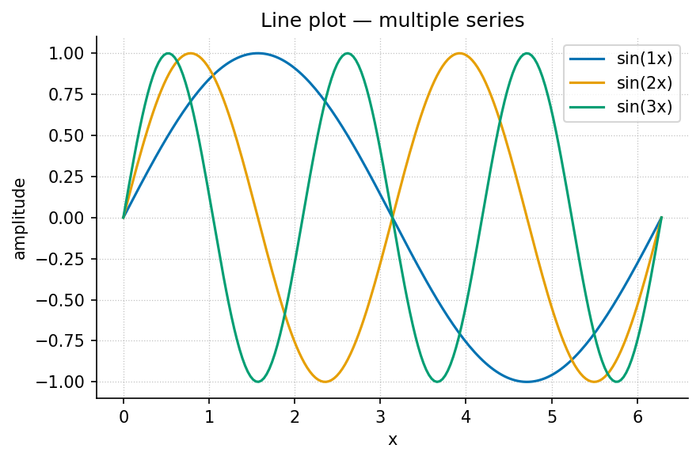
visualization.gallery.line_plot.Two figures side by side (Pandoc fenced div; falls back to stacked):
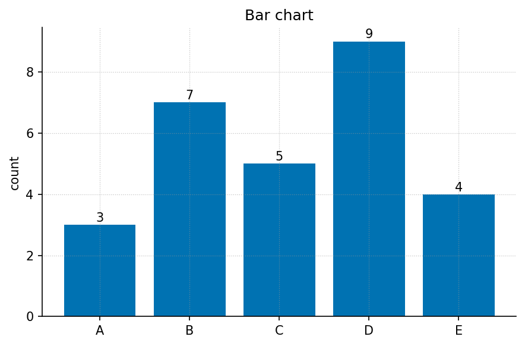
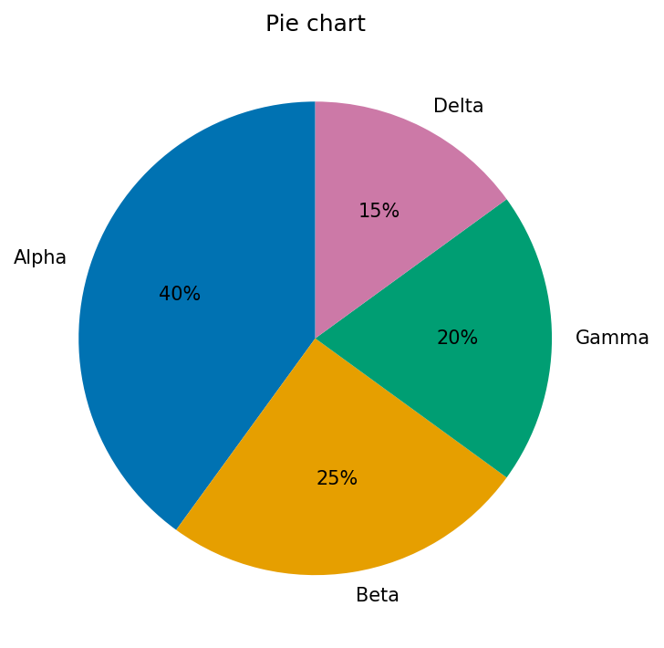
A multi-panel composite (fig. 16):
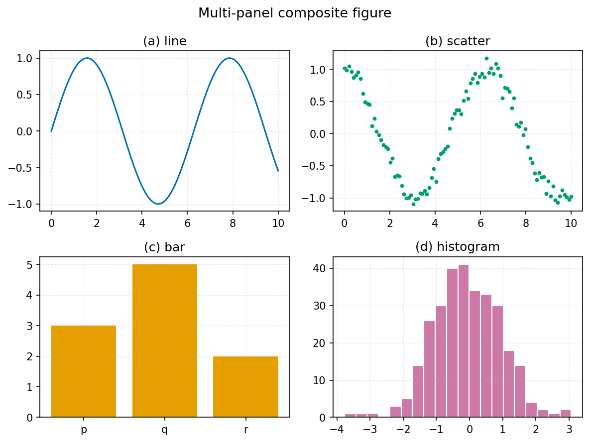
The full plot-type gallery lives in ../figures/gallery/
and includes: line, scatter-with-fit, bar, grouped bar, horizontal bar,
histogram, box, violin, heatmap, contour, quiver field, step, stacked
area, error bars, log-log, pie, annotated, and multi-panel. The chapters
use the model curves and instructional error bars; the remaining plots
demonstrate alternative presentations.
47.7 7. Diagrams (Mermaid)
The pipeline renders fenced mermaid blocks to figures
(and falls back to the .mmd source if the Mermaid CLI is
absent). One worked example of each kind the builders in
src/mermaid/diagrams.py support:
Flowchart:
graph TD
A[Inputs] --> B[Model]
B --> C[Predictions]
C -->|revise| ASequence:
sequenceDiagram
participant Author
participant Engine
Author ->> Engine: edit config.yaml
Engine -->> Author: rendered PDFState:
stateDiagram-v2
[*] --> Stub
Stub --> Drafted: fill
Drafted --> Reviewed: review
Reviewed --> [*]: publishClass:
classDiagram
class ChapterRef {
+str part_id
+str file
+stem() str
}
ChapterRef --> TocEntry : numbered asEntity-relationship:
erDiagram
PART ||--o{ CHAPTER : contains
CHAPTER ||--|| LAB : hasPie, Gantt, mindmap, timeline, quadrant, and user-journey diagrams
are also supported — see src/mermaid/diagram_specs.yaml for
a worked spec of each.
47.8 8. Code
Inline code: call
textbook.models.logistic_growth(t, r=..., ...).
A fenced code block with a language (syntax-highlighted) and a caption (lst. 1):
Listing 1: Calling the tested computational backbone.
from textbook import models
import numpy as np
t = np.linspace(0, 10, 100)
n = models.logistic_growth(t, r=0.8, carrying_capacity=100.0, initial=5.0)
print(n[-1]) # -> approaches the carrying capacityA shell example:
uv run python scripts/generate_figures.py
uv run --extra dev python -m pytest tests/ --cov=src47.9 9. Cross-references and citations
Cross-references resolve by label: figure fig. 13, table tbl. 14, equation eq. 17, and section sec. 46. Never hand-number — Pandoc fills these in.
Citations resolve against references.bib: a single
source (Box 1976),
multiple sources (Sandve et al. 2013;
Nyquist
1932), and an in-text form — Lorenz (1963) showed the effect first. A locator
narrows the reference (May 1976, 12–14).
47.10 10. Media and data
Embedded raster image (any PNG/JPG works the same way as a figure):
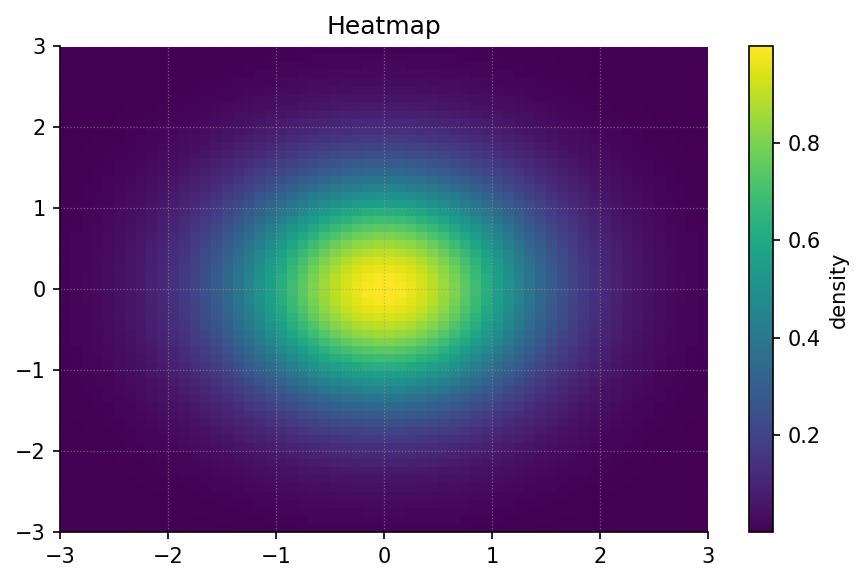
Audio and video embed in HTML targets (PDF shows the caption + link). Syntax:

{width=70%}A downloadable data file lives at assets/data/sample_dataset.csv;
its contents as a table:
| condition | replicate | measurement | standard_error |
|---|---|---|---|
| control | 1 | 2.10 | 0.20 |
| control | 2 | 2.30 | 0.18 |
| treatment_low | 1 | 3.60 | 0.25 |
| treatment_high | 1 | 4.80 | 0.35 |
The error-bar figure fig. 18 visualises this kind of data:
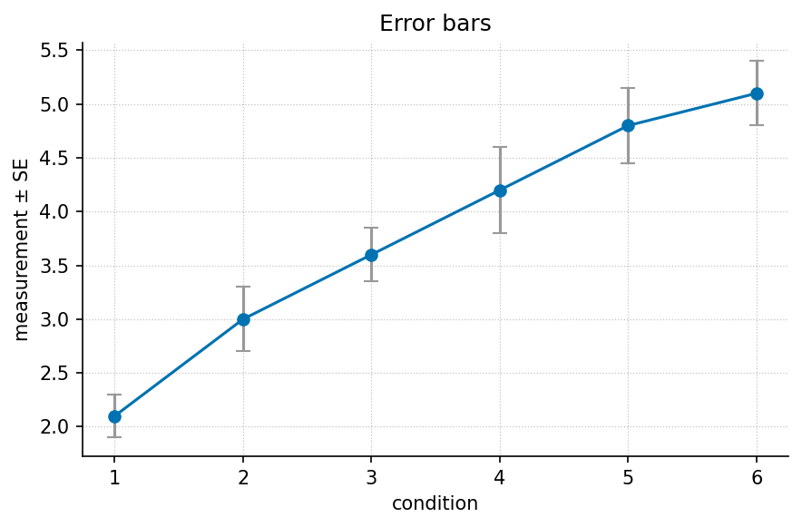
47.11 11. Pedagogical blocks
These are the reusable teaching elements chapters draw on.
Learning objective. After this section a reader can identify which Markdown primitive to use for a given purpose. Explain a selected primitive, identify its label, and justify its use in a worked example.
Worked example. Given \(r = 0.8\), \(K = 100\), \(N_0 = 5\), evaluate \(N(10)\) via eq. 17 using
textbook.models.logistic_growth. The result approaches \(K\). At \(t=10\), the denominator is \(1+19e^{-8}=1.0063738\), so \(N(10)=99.3667\).
Try it. Change \(r\) to \(1.5\) and predict, then check, how the curve shifts. Expected answer: a larger positive rate advances the rise at positive time while preserving the initial value and the limiting capacity.
Summary. This appendix demonstrated text, lists, callouts, tables, math and units, figures, diagrams, code, cross-references, media, and pedagogy blocks — the complete primitive set. Check these examples in each selected output format when changing the rendering toolchain.
47.12 12. Miscellany
A horizontal rule separates major shifts in topic (three or more dashes):
Raw inline HTML is supported only inside
<details>, <aside>, or
<callout> per project style; everything else uses
Markdown. Unicode renders directly: α, β, γ, Δ, ∑, ∞, ≈, →. For PDF
math, prefer LaTeX ($\alpha$) over raw Unicode in
equations.
48 Master Glossary
Definitions follow the conventions used in this book. They specify roles in a model and do not claim that one representation captures every application.
48.1 Boundary
The declared separation between processes modeled explicitly and influences represented as external inputs or omitted conditions. A boundary is chosen for a question; it is not evidence that external influences do not exist.
48.2 Dynamics
A rule describing how state changes with time or a sequence of updates. A static input-output curve is not a dynamic law unless a separate temporal rule supplies state and timing.
48.3 Emergence
A system-level pattern arising from interactions among components under a stated observation and scale. Naming a pattern emergent does not by itself explain its mechanism or establish that a component model predicts it.
48.4 Equilibrium
A state whose net change is zero under a specified update law and fixed conditions. A flat recorded observable can have other causes, such as a measurement limit, so the law and observation rule matter.
48.5 Feedback
A connection through which an output or measured state influences a subsequent input or action. The connection must have a sign, timing rule and mathematical relationship before a stability claim can be evaluated.
48.6 Gradient
A rate of change with respect to a coordinate or variable, or the vector of such rates for a scalar function. Its units depend on both the quantity and coordinate; a plotted slope is one particular representation.
48.7 Model
An explicit representation connecting assumptions, quantities and predictions for a declared question. A model can be internally consistent yet empirically inadequate; its use depends on checks appropriate to its scope.
48.8 Network
A set of identified elements and relationships, often represented as nodes and edges. Node values, edge weights and display positions have separate meanings that must not be inferred from the picture alone.
48.9 Observable
A quantity recorded through a specified measurement or counting procedure. It need not equal the model state: aggregation, noise, duplicate records and instrument limits can intervene.
48.10 Parameter
A quantity held fixed within a specified model calculation that configures its behavior. A parameter may be estimated or revised between calculations; that does not make it a time-varying state inside the original model.
48.11 Regulation
Action intended to keep a declared quantity near a target or within a range. Evaluating regulation requires a plant law, action law, observation rule and assumptions about timing and disturbances.
48.12 State
The modeled information at a time or update that the rule uses to determine subsequent change. The chosen state depends on the question and need not include every recorded attribute of a real system.
48.13 System
A declared collection of interacting components considered together for a question. Its definition includes a boundary and relevant quantities; the label alone does not supply a model or measurement protocol.
48.14 Threshold
A stated value at which a decision rule changes or a model exhibits a specified qualitative transition. A visually steep response can suggest a threshold but does not establish a discontinuity or a causal mechanism.
48.15 Variable
A quantity that can take different values across observations, states or inputs. Its role and units must be declared; storage as a numeric array does not make unlike variables scientifically interchangeable.
49 Appendix G — Index of Key Terms
Reference appendix · Curated section index.
This authored index points to sections rather than page numbers, so its links remain useful in PDF, HTML, and EPUB. It is a navigation aid, not the output of an indexing service. Definitions appear in sec. 48; the entries below identify the main explanations and worked uses.
- Boundary — choosing a system and its environment: sec. 4; scope of inference: sec. 18.
- Dynamics — rate laws, ratios, and half-lives: sec. 13.
- Emergence — limits of inferring interactions from overall behavior: sec. 10.
- Equilibrium — logistic limit: sec. 8; state and invariant distinctions: sec. 12.
- Feedback — error, gain, and the ideal integrator: sec. 14.
- Gradient — interpreting fitted slopes: sec. 17; scale and composition: sec. 9.
- Model — assumptions and adequacy: sec. 4; choosing alternative families: sec. 16.
- Network — connections, local state, and normalized representations: sec. 10.
- Observable — measurement versus state: sec. 12; paired fixture observations: sec. 17.
- Parameter — fixed inputs versus evolving quantities: sec. 8; dimensional checks: sec. 44.
- Regulation — setpoints and ideal error dynamics: sec. 14.
- State — variables needed for a declared update rule: sec. 12.
- System — specifying a boundary and a question: sec. 4.
- Threshold — distinguishing a half-response scale from a sharp cutoff: sec. 9; extrapolation limits: sec. 17.
- Variable — changing inputs and unit conventions: sec. 6; sec. 44.
For verification and source custody, see sec. 5 and sec. 43. For worked arithmetic, see sec. 45. For assumptions behind mathematical limits, see sec. 46.
Footnotes collect at the end of the document (or page, in PDF). Use them for asides that would interrupt the sentence.↩︎